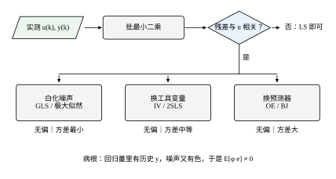
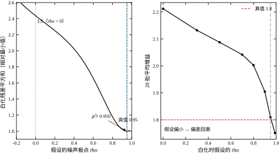
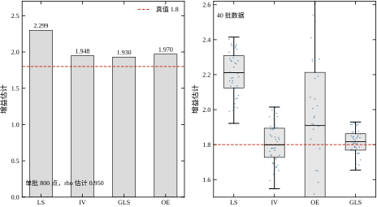
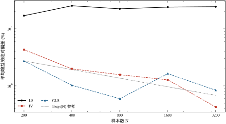
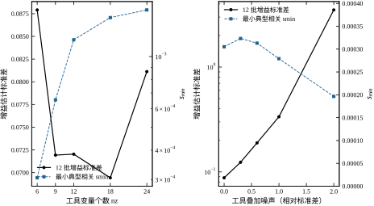
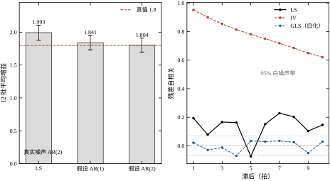

第 18 章 §18.6.3 留下了一行难看的数字：在 AR(1) 噪声、\rho=0.95 的条件下，最小二乘把增益 1.8 估成了 2.2986，误差 +27.70%。同一行还有三个数：a_1 误差 −44.08%，b_1 误差 +8.27%，残差一阶自相关 0.194。
四个数摆在一起，问题的形状就出来了。残差自相关 0.194，而 N=800 时白噪声的门槛是 1/\sqrt{800}=0.0354，0.194 是它的 5.5 倍——说明残差里还剩一大块结构没被模型吃掉。可同一套算法、同样的 800 点、同样的 n_a=3、n_b=3、n_k=1，换成白噪声后增益误差只有 +0.08%。
四件事里只变了一件：噪声从白变成有色。这排除了“程序写错”“数据太短”“阶数选错”这三种最常见的解释，剩下的只有一种：噪声的颜色改变了回归向量与噪声之间的关系。
第 18 章式 (18-11) 早就预言了这一点：
\mathbb{E}[\hat\theta]-\theta^{\ast}=(\Phi^{\top}\Phi)^{-1}\,\mathbb{E}[\Phi^{\top}E] \tag{19-1}
白噪声时 \mathbb{E}[\Phi^{\top}E]=0，偏差为零；有色噪声时 y_{k-1} 里含有 e_{k-1}，而 \mathbb{E}[e_{k-1}e_k]=\rho\sigma^2\neq0，第二项不为零，偏差就出现了。这个结论在第 18 章只是一个解释，到本章它变成一个要动手修的对象。
要修的东西有三个层次，分清它们很重要。
第一层：解是唯一的，但不是对的。 \Phi^{\top}\Phi 可逆，正规方程有唯一解，残余平方和最小，残差图看着也像那么回事。LS 没有任何“我算不出来”的表示，它只会给出一个数，而那个数是错的。这种失败最危险，因为它不报警。
第二层：偏差是系统性的，不是随机的。 40 批蒙特卡洛（§19.6.4）里 LS 的增益均值是 2.2070，40 次全在真值上方；标准差只有 0.1309，却背着 +22.61% 的偏差。这意味着多测几批、多取平均，也救不回来——平均只会让你更自信地停在错的地方。
第三层：这个偏差不会被残差检查抓住。 残差自相关 0.194 确实超了门槛，但它只告诉你“还有东西没拟合完”，没告诉你“参数偏了”。§19.6.3 会给出一个更刺眼的对照：LS 残差与历史 y 的相关系数只有 −0.018、−0.046、−0.082，全都“看起来很小”；真正露馅的是残差与更早的历史 u 的相关，第 4 至 6 阶分别是 −0.309、−0.105、+0.056。也就是说，病根在输入侧，用输出侧的自相关去找，方向就错了。
把 ARX 的回归向量摊开看：
\varphi_k=[-y_{k-1},\,-y_{k-2},\,-y_{k-3},\,u_{k-1},\,u_{k-2},\,u_{k-3}]^{\top} \tag{19-2}
前三个分量是被解释变量自己的历史。这是 ARX 结构的力量来源——它让模型能表达“输出记得自己走过的路”；这也是它的死穴——历史 y 里含着历史噪声。
y_{k-1} 由 e_{k-1} 决定一部分，e_{k-1} 又由 e_{k-2} 和 w_{k-1} 决定，一路追下去，y_{k-1} 与 e_k 之间就有一条细但不断的通道。噪声越“黏”（\rho 越接近 1），通道越宽。
关键在于：这条通道与增益的大小无关，却与增益的估计直接相关。 LS 在拟合时看到 y_{k-1} 与 y_k 高度相关，就把“输出自己延续自己”这件事解释成“对象有很大的惯性”，于是把 a_1 往负得更多的方向推（实测 −44.08%），再用一个更大的 b 去补偿，增益就被抬到了 2.2986。
一个现场可以验证的推论：噪声越黏，偏差越大。 §19.6.1 的三行数据正是这个推论：白噪声 +0.08%、\rho=0.8 时 +3.73%、\rho=0.95 时 +27.70%。偏差不是随 \rho 线性增长，而是过了某个点之后急剧放大——因为 \rho\to1 时，噪声的“记忆”长到与对象的主导时间常数可比，两者在数据里再也分不开。
这里要强调一个容易混淆的地方：病根不是“噪声大”，而是“噪声有记忆”。 白噪声再大，LS 也只是方差变大、均值仍对准真值；有色噪声哪怕幅度很小，只要记忆足够长，均值就会系统性偏移。§19.6.4 的 GLS 标准差 0.0730 比 LS 的 0.1309 还小，说明修好偏差之后，噪声本身并不构成障碍。
既然病根是 \mathbb{E}[\Phi^{\top}E]\neq0，出路只有两条逻辑：要么让 E 变白（改目标函数），要么让 \Phi 换成与 E 无关的东西（改回归量）。第二条又分两种做法——换工具、换预测器。合起来是三条：
第一条：白化噪声（GLS / 极大似然）。 承认噪声有色，把它建模成一个滤波器，然后对数据先做一次逆滤波，让残差重新变白。这条路不改结构、不改数据，只在目标函数上加一层。实测把 +27.70% 压到 +7.21%，\rho 还能从数据里估出来（\hat\rho=0.950，20 个种子标准差 0.012）。
第二条：换工具变量（IV / 2SLS）。 保留 ARX 结构，但不再用 \Phi 自己去回归，而是另找一组与噪声无关、又与 \Phi 高度相关的变量 Z 作为“代理回归量”。实测单批 +8.20%，40 批平均偏差 +0.21%——偏差基本消掉了，代价是方差比 GLS 大一半。
第三条：换预测器（OE / BJ）。 承认噪声加在输出端而不是方程里，把对象模型与噪声模型彻底分开，用自由仿真误差做准则。这条路在理论上最干净，实测偏差 +0.19%，但标准差 0.8309——是 GLS 的 11 倍。它无偏，但方差大得不能单独用。
三条路的关系画在图 19-1 里。图的判定框是“残差与 u 相关？”——注意判据落在输入侧，而不是残差自相关。原因就是 §19.1.1 第三层说的：残差自相关只能提示“没拟合完”，不能定位病根；而残差与历史 u 的相关一旦显著，就说明回归量里确实混进了与噪声同源的东西。

图底那行注记是本章的全部出发点：回归量里有历史 y，噪声又有色，于是 \mathbb{E}[\varphi e]\neq0。 三条出路各自攻击这句话的一个成分——第一条攻击“噪声有色”，第二条攻击“回归量里有历史 y”，第三条把两者一起换掉。
现场遇到这类偏差，最常见的反应是“换个高级算法”，比如从 ARX 换成一个神经网络模型，或者把阶数加到很高。本章要先堵死这两条捷径，因为它们看起来能救，实际不能。
加阶数不管用。 第 18 章已经验证过：n=3\to4，残差自相关从 0.194 掉到 0.018（残差变白了），增益却从 2.2986 变成 1.8473，仍偏 2.6%。为什么？因为加阶数让模型多了一个自由度去“吸收”噪声的相关性，残差确实变白了，但回归向量里仍然是历史 y，\mathbb{E}[\Phi^{\top}E] 仍然不为零，只是被新增的参数摊薄了一部分。这不是修偏差，这是把偏差藏起来。
换非线性模型同样不管用。 偏差来自“回归量与噪声相关”这个统计事实，与模型是线性还是非线性无关。一个足够大的神经网络完全可以把 2.2986 这条错误的映射拟合得更好——它的训练误差会更小，参数更多，看起来更“高级”，但它在验证集上的增益仍然偏。原因很直接：偏差只取决于 \mathbb{E}[\varphi e]，而 \varphi 里放的是历史 y，“历史 y 含噪声”这条通道不会因为模型变大而消失。§19.6.7 会给出一个受限的定量版本：只把噪声模型的阶数从 AR(1) 加到 AR(2)，偏差就从 +2.26% 降到 +0.22%。能改偏差的是“把噪声建对”，不是“把模型建大”。
真正管用的，是改变“用什么与噪声对齐”这件事。 三条出路各自对应一种改法：GLS 改“权”（让噪声小的方向说话更响），IV 改“回归量”（换一组与噪声无关的代理），OE 改“预测器”（改用多步仿真误差，让噪声进不来）。三者的共同点是它们都直接针对 \mathbb{E}[\Phi^{\top}E]\neq0 这个式子的某一项，而不是绕开它。
这条区分给本章定了一个基调：我们不是在找一个拟合更好的模型，而是在找一个偏差为零的估计量。 拟合好坏看残差，偏差有无看均值——这两件事在有色噪声下会分道扬镳，本章的所有实验都是在展示它们分道扬镳的样子。
第一个前提：本章沿用第 18 章的对象与数据生成方式。 对象仍是
G(s)=\frac{1.8}{(0.5s+1)(0.12s+1)(0.03s+1)}e^{-0.04s} \tag{19-3}
T_s=0.05 s，n_a=3、n_b=3、n_k=1，真值 \theta^{\ast} 与式 (18-4) 完全相同。这不是偷懒，而是必需：本章要衡量的量是“偏差”，偏差 = 估计均值 − 真值，没有同一个真值就无法比较四种估计器。所有表格里的百分比都以 K=1.8 为分母。
第二个前提：噪声的生成方式从方程误差换成“方程误差 + AR(1) 整形”。 具体是
e_k=\rho e_{k-1}+w_k,\qquad w_k\sim\mathcal{N}(0,\sigma^2) \tag{19-4}
噪声仍然加在方程右端（不是输出端），只是它自己带记忆。这样安排有两个好处：一是与第 18 章直接可比（\rho=0 就退回白噪声）；二是它把“病根”隔离得很干净——结构中唯一的新东西就是 \rho，其余全部不动。
第三个前提：本章讨论的全部是开环数据。 输入 u 由 PRBS 独立产生，与噪声 w 无关。这条假设是工具变量法的命门：如果 u 是反馈算出来的，u 与 e 就天然相关，历史 u 也不再是合格的工具。闭环的情形留到第 21 章，本章只在 §19.5.4 给出“怎么判断自己已经踩进去了”。
三个前提合起来限定了本章的适用范围：开环、单输入单输出、噪声可被低阶 AR 描述、结构已知。 这四条任何一条不成立，本章的结论都要打折。§19.5 会逐条说明打多少折。
§19.2 给定义：ARMAX、OE、BJ 三种结构的统一写法，预测误差形式，似然函数，工具变量的矩条件，以及“可辨识”到底指什么。§19.3 做推导：准差分白化怎么把有色噪声变白、\rho 的剖面似然为什么能降成一维搜索、2SLS 的正规方程怎么来、IV 的渐近方差为什么与工具的相关强度成反比、弱工具为什么只伤方差、OE/Gauss-Newton 的迭代格式、噪声阶数选错时偏差回潮多少。
§19.4 讲实现：\rho 的网格搜索与细化、AR(2) 白化的写法、工具矩阵怎么堆、条件数与最小奇异值的监测、PEM 的多起点、以及“先解 LS 再修”这条工程流水线。§19.5 讲边界：什么时候 GLS 会过白化、什么时候 IV 的方差不可接受、噪声阶数怎么定、闭环数据怎么识别、交付物该包含什么。
§19.6 用六个实验把上述结论逐个量化：实验 0 复现靶子，实验 1 看 GLS 与 \rho 剖面，实验 2 看工具变量该选谁，实验 3 算四种估计器的偏差-方差账，实验 4 扫样本量，实验 5 扫工具个数与强弱，实验 6 看噪声阶数错配。每个数字都能由 ch019_sim.py 复算。§19.7 给决策流程、常见错误表和与后续章节的接口。
给两类读者两条不同的路线。要马上用的人走 §19.1.7 → §19.4.7 → §19.5.5 → §19.7.5：先看案例，再照七步流水线做，最后按表 19-10 写交付物，速查表贴在手边。这条路线不需要读任何推导，但它要求你信任 §19.6 的数字。要弄懂为什么的人走 §19.2 → §19.3 → §19.6：先把三种结构写成同一个式子，再看准差分与剖面似然怎么把“修偏差”变成“一维搜索”，最后用六个实验验证每一步推导。这条路线里 §19.3.9 的一阶对象解析式是重点，它把“偏差从哪来”算到了可以手算的程度。
两条路线在 §19.6 汇合，这也是本章把实验放在最后、而不是穿插在各节里的原因：所有数字集中在一起，才能横向比较；分散在各节里，读者只会记住自己刚看过的那一个。
把上面的思路落到一个具体场景上，后面的公式才有落点。
一台液压位置伺服，阀芯指令是输入、光栅尺读数是输出。设备已经跑了几年，最近定位时快时慢，怀疑是阻尼变了。不能拆机做阶跃测试，只能在正常节拍里采集数据：指令是一段段重复的往返轨迹，采样周期 0.05 s，一次采集 40 s，共 800 点。
拿到数据后先跑 LS，得到 \hat K=2.2986。可是这台设备的样本出厂标定是 1.8 左右，偏差 27.70% 太大了，不像“阻尼变了一点”能解释的。接着看残差自相关：0.194，远超白噪声门槛 0.0354。到这一步可以确定两件事：模型没拟合完，而且不是随机噪声造成的。
再往下就分岔了。若直接加大阶数，残差会变白（第 18 章实测 0.018），但增益还是 1.8473——这笔账白花了。正确的一步是查“噪声有多黏”：扫一遍 \rho，剖面在 0.95 处给出明确谷底，\hat\rho=0.950。这说明传感器或液压油路的噪声有很强的记忆，很可能是油温波动叠加在光栅读数上。
知道 \rho 之后，GLS 给出 1.9298（+7.21%），IV 给出 1.9476（+8.20%）。两个数相差不到 1%，互相印证——这一步是本章最实用的检验：两个原理完全不同的方法给出同一个数，这个数就可信。 再看 s_{\min}=3.1\times10^{-4}，刚好在门槛附近，说明 IV 的方差不会小，最终交付应该以 GLS 为主、IV 为辅。
最后一步是判断“这 7% 是偏差还是运气”。单批数据答不了这个问题，只能看 40 批的统计：GLS 平均 +0.78%、标准差 0.0730。结论是：这台设备的真实增益就在 1.81 附近，2.2986 那个数是噪声颜色造出来的假象。
这个案例里没有一步用到高深算法，全部是本章 §19.4.7 那条流水线的直接应用。它的价值在于展示一个事实：偏差是可以被“诊断出来”的，不需要先知道真值。 诊断的入口不是估计值本身，而是残差与 \rho。
全章围绕一个判断：这个估计量，偏差为零吗；如果为零，代价是多少方差。 最小二乘从不回答第一个问题，本章的三种方法都必须回答，而且答案要用数字写出来。
第 18 章表 18-1 按“噪声从哪里进来”分了四种结构。本章把其中三种写成同一个形式，只是各部分取不同的多项式：
y_k=\frac{B(q^{-1})}{A(q^{-1})}u_k+\frac{C(q^{-1})}{D(q^{-1})}e_k \tag{19-5}
其中
A(q^{-1})=1+a_1q^{-1}+\dots+a_{n_a}q^{-n_a},\qquad B(q^{-1})=b_1q^{-1}+\dots+b_{n_b}q^{-n_b} \tag{19-6}
C(q^{-1})=1+c_1q^{-1}+\dots+c_{n_c}q^{-n_c},\qquad D(q^{-1})=1+d_1q^{-1}+\dots+d_{n_d}q^{-n_d} \tag{19-7}
式 (19-5) 的第一项是对象，第二项是噪声模型。所有结构的差别只在“第二项取什么”：
本章的实验只用到前两种：GLS/极大似然走 ARMAX 路线（估 C 的系数），OE 走 C=D=1 路线。BJ 是两者的并集，工程上用得少，因为参数一多，迭代就容易停在局部极小。
表 19-1 本章三种结构的对象与噪声模型
| 结构 | 对象 G | 噪声模型 H | 待估参数 | 求解方式 | 一致性条件 |
|---|---|---|---|---|---|
| ARMAX | B/A | C/A | a,b,c | 迭代（PEM）或 GLS | C 能把噪声谱描述清楚 |
| OE | B/A | 1 | a,b | 迭代（非线性 LS） | 噪声与输入无关 |
| BJ | B/A | C/D | a,b,c,d | 迭代（PEM） | C/D 能把噪声谱描述清楚 |
表里“一致性条件”这一列是本章的主线。ARMAX 的一致性要求噪声谱落在 C/A 这个族里——如果真实噪声是 AR(2) 而你只给了 AR(1)，一致性就破了（§19.6.7 的 +2.26%）。OE 的一致性只要求噪声与输入无关，条件最宽，但代价是它完全不利用噪声的结构，方差大。
一个代数上的细节值得指出：ARMAX 里对象与噪声共用分母 A，这不是建模者的选择，而是“方程误差”这个假设的必然结果。方程误差下 A y_k=B u_k+C e_k，两边同除 A 就得到式 (19-5)，噪声自然带上了 1/A。这个共用分母带来一个副作用：估错 A 会同时污染对象和噪声模型，两者绑在一起。OE 没有这个耦合，所以它的估计虽然方差大，但不会因为噪声模型估错而把对象带偏。
式 (19-5) 不能直接拿去回归，因为 e_k 未知。把它改写成“用已知量预测 y_k”的形式，才是所有迭代法的共同入口。
从式 (19-5) 解出 e_k：
e_k=\frac{D}{C}\left(y_k-\frac{B}{A}u_k\right) \tag{19-8}
在 k-1 时刻，y_k 未知、e_k 未知，但 y_{k-1},y_{k-2},\dots 与 u_{k-1},u_{k-2},\dots 都已知。把 e_k 拆成“可预测部分 + 新息”：e_k 经过 C/D 之后的新息是白的，所以 y_k 的一步最优预测是
\hat y_{k\mid k-1}=\frac{B}{A}u_k+\left(1-\frac{D}{C}\right)\left(y_k-\frac{B}{A}u_k\right) \tag{19-9}
这个式子的读法是：先用对象模型给出一个“无噪预测” Bu/A，再用噪声模型把上一步的预测误差修正回来。 修正项的系数 1-D/C 就是噪声模型的可预测部分——噪声越黏（D/C 越接近 1），修正项越小，预测越依赖对象模型本身。
预测误差定义为
\varepsilon_k(\theta)=y_k-\hat y_{k\mid k-1}=\frac{D(q^{-1})}{C(q^{-1})}\left(y_k-\frac{B(q^{-1})}{A(q^{-1})}u_k\right) \tag{19-10}
这个量有两个名字，取决于语境：在辨识里叫预测误差，在滤波里叫新息。它是本章所有准则函数的原料。
对 ARMAX（D=1）特别简单：\varepsilon_k=(y_k-Bu_k/A)/C，也就是“先把对象残差算出来，再用 1/C 白化一遍”。这句话就是 §19.3.1 准差分白化的全部内容。
一步预测与多步预测要分清。 式 (19-9) 里用到了 y_k 本身（通过修正项），所以它是“用 k-1 时刻的信息预测第 k 拍”的一步预测。若把修正项全部去掉、只留 Bu/A、从零状态一路推下去，得到的是自由仿真：
\hat y_k^{\mathrm{sim}}=\frac{B(q^{-1})}{A(q^{-1})}u_k,\qquad \varepsilon_k^{\mathrm{sim}}=y_k-\hat y_k^{\mathrm{sim}}
两者差在哪？一步预测每拍都被实测 y 拉回来，误差不会累积；自由仿真没有这个拉回，模型的一点偏差会沿着 A 的极点一路放大。所以“一步预测误差小”只说明模型在短时尺度上对，不说明它能长期外推。 工程上交付模型前必须做一次自由仿真（§19.5.5 第五项），原因就在这里。
这个区分也决定了 OE 与 ARMAX 的性格：OE 直接最小化 \varepsilon^{\mathrm{sim}}，所以它对长期行为负责，但准则的谷很窄（§19.3.6）；ARMAX 最小化一步预测误差，谷宽、方差小，但它的“好”是在一步尺度上的好。选哪个，取决于模型将来是用于“每拍修正”还是“独立外推”。
若 e_k 是高斯的，式 (19-10) 的预测误差也是高斯的，且方差为 \sigma^2（因为 D/C 是首一滤波器，对白噪声的稳态增益为 1）。于是 N 个样本的联合密度是
p(Y\mid\theta,\sigma^2)=\prod_{k=k_0}^{N}\frac{1}{\sqrt{2\pi}\sigma}\exp\left(-\frac{\varepsilon_k^2(\theta)}{2\sigma^2}\right) \tag{19-11}
取负对数、丢掉常数：
-\ln p=\frac{N}{2}\ln(2\pi\sigma^2)+\frac{1}{2\sigma^2}\sum_{k}\varepsilon_k^2(\theta) \tag{19-12}
对 \sigma^2 求导置零，得 \hat\sigma^2=\frac{1}{N}\sum\varepsilon_k^2。代回去，\sigma^2 从式子里消失，只剩
V_N(\theta)=\frac{1}{2N}\sum_{k=k_0}^{N}\varepsilon_k^2(\theta) \tag{19-13}
这就是预测误差准则（prediction error criterion）。它的形式与最小二乘的 J=\|Y-\Phi\theta\|^2 几乎一样，唯一的差别是 \varepsilon_k 里含参数：ARMAX 的 C 在分母上，OE 的 A 在分母上，两者都让 V_N 对 \theta 非线性。
这一步是本章的分水岭。 最小二乘之所以有闭式解，是因为残差对参数是线性的；一旦噪声模型进来，残差对参数变成非线性（哪怕只是一阶），闭式解就没了，必须迭代。§19.3.5 会说明这个非线性有多“轻”——用 Gauss-Newton 通常五步内收敛。
式 (19-13) 还有一个容易忽略的性质：它同时是“极大似然”和“最小预测误差”。高斯假设给出前者，而后者不依赖高斯假设——只要噪声有界、准则取二次型，最小化 V_N 得到的估计仍然一致。这个“双重身份”让 PEM 在工程上很稳：模型假设错了，它退化成一个合理的拟合准则，而不是彻底失效。
工具变量法不从似然出发，它从矩条件出发。想法只有一句：找一个变量 z_k，它与回归量高度相关，但与噪声不相关。
严格写法是两条：
\mathbb{E}[z_k\,\varphi_k^{\top}]\ \text{满秩},\qquad \mathbb{E}[z_k\,e_k]=0 \tag{19-14}
第一条叫相关性（relevance），保证 Z 能“代替” \Phi 提供信息；第二条叫外生性（exogeneity），保证方程在 Z 上的投影不带偏差。两条缺一不可，而且失败方式完全不同：第一条不满足，方差爆炸；第二条不满足，偏差回潮。§19.6.3 与 §19.6.6 会把这两条分开量化。
有了 Z，把式 (18-2) 两边左乘 Z^{\top} 并取期望：
\mathbb{E}[Z^{\top}Y]=\mathbb{E}[Z^{\top}\Phi]\,\theta+\mathbb{E}[Z^{\top}E] \tag{19-15}
第三项由式 (19-14) 的第二条为零，于是
\theta=\left(\mathbb{E}[Z^{\top}\Phi]\right)^{-1}\mathbb{E}[Z^{\top}Y] \tag{19-16}
用样本矩替换总体矩，得到工具变量估计量
\hat\theta_{\mathrm{IV}}=(Z^{\top}\Phi)^{-1}Z^{\top}Y \tag{19-17}
这个式子在形式上与式 (18-1) 一模一样，只是把 \Phi^{\top} 换成了 Z^{\top}。所以工具变量不是“另一种算法”，它是“同一个算法换一套回归量”。 这个视角很重要：它解释了为什么 IV 能保留 LS 的全部数值工具（QR、递推、正则化），也解释了为什么它的偏差性质完全由 Z 的性质决定。
式 (19-17) 要求 Z 与 \Phi 同维（方阵）。当工具个数 n_z 大于参数个数 p 时，Z^{\top}\Phi 不是方阵，不能直接求逆。这时用两阶段最小二乘（2SLS）：
\hat\theta_{\mathrm{2SLS}}=\left(\Phi^{\top}P_Z\Phi\right)^{-1}\Phi^{\top}P_ZY,\qquad P_Z=Z(Z^{\top}Z)^{-1}Z^{\top} \tag{19-18}
P_Z 是向 Z 的列空间投影的矩阵。所以 2SLS 的读法是：先把回归量 \Phi 投影到工具张成的空间上，再用投影后的 \tilde\Phi=P_Z\Phi 做普通最小二乘。 这就是“两阶段”三个字的来历——第一阶段把 \Phi 回归到 Z 上，第二阶段用拟合值回归 Y。
工程实现上不必真的算 P_Z（那是 N\times N 矩阵）。把式 (19-18) 的分子分母都乘以 (Z^{\top}Z)^{-1}，得到等价的紧凑形式
\hat\theta_{\mathrm{2SLS}}=\left(M^{\top}(Z^{\top}Z)^{-1}M\right)^{-1}M^{\top}(Z^{\top}Z)^{-1}Z^{\top}Y,\qquad M=\Phi^{\top}Z \tag{19-19}
这个形式只涉及 p\times p 和 n_z\times n_z 的小矩阵，计算量可以忽略。
本章反复用两个词，必须先把它们分清，否则后面的表格会被读错。
一致（consistent） 说的是 N\to\infty 时的行为：\hat\theta\to\theta^{\ast}（依概率）。它只关心极限，不关心有限样本。一个估计量可以一致性很好而在 N=800 时偏 8%，也可以一致但在小样本里完全不可用。
有效（efficient） 说的是有限样本（或渐近）的方差：在同样一致的前提下，方差越小越有效。克拉美-罗下界给出的就是“最有效”的基准。
这两个词对应本章的两张表，而且它们经常指向不同的赢家：
工程上选哪个，取决于你要什么。若模型只用来算增益、误差 ±10% 可接受，选方差小的；若模型要外推、要算相位裕度、要写进交付物，选偏差小的。“哪个更准”这个问题在没有说明“准指哪一半”之前，是没有答案的。
第 18 章 §18.2.6 讲了持续激励。有色噪声进来之后，可辨识性多了三条要求，每一条都对应本章一个实验的失败模式。
第一条：噪声模型必须可辨识。 式 (19-7) 里 C、D 都取首一（常数项为 1），这是为了让增益有唯一解。若不固定首项，C 乘任意常数、\sigma^2 除同一常数，似然完全不变——参数不可辨。工程上所有辨识工具箱都默认首一，就是这个原因。
第二条：对象与噪声不能互相冒充。 若对象有一个慢极点、噪声也有一个慢极点，两者在数据里长得一样。ARMAX 共用分母 A 会加剧这个混淆：一个慢极点既可以解释成“对象惯性大”，也可以解释成“噪声很黏”。§19.6.1 里 a_1 偏 −44.08% 而增益只偏 +27.70%，正是这种“参数互相顶替”的表现——a_1 顶掉了一部分本该属于噪声模型的东西。
第三条：工具必须真的外生。 式 (19-14) 的第二条不是“看起来相关小”就行，而是要求严格为零。§19.6.3 会给出反例：用历史 y 当工具，表面上与回归量相关得极好（它本身就是回归量的一部分），但因为它含噪声，\mathbb{E}[z e]\neq0，结果偏 +20.25%，比 LS 只好了 7 个百分点。工具的“相关性”和“外生性”必须同时检查，只看一个必然出错。
前面说了“一致”与“有效”，还需要一个能算的量：估计量的标准差。现场写交付物时写的“\pm”那一项，就来自这里。
在相当宽的条件下（噪声有界、模型可辨、激励充分），本章的所有估计量都渐近正态：
\sqrt{N}\left(\hat\theta_N-\theta^{\ast}\right)\ \xrightarrow{d}\ \mathcal{N}\!\left(0,\,P\right) \tag{19-20}
P 是渐近协方差矩阵。三种方法给出三种 P：
P_{\mathrm{LS}}=\sigma^2\left(\mathbb{E}[\varphi\varphi^{\top}]\right)^{-1},\qquad P_{\mathrm{IV}}=\sigma^2\left(\mathbb{E}[\varphi z^{\top}]\right)^{-1}\mathbb{E}[zz^{\top}]\left(\mathbb{E}[z\varphi^{\top}]\right)^{-1} \tag{19-21}
P_{\mathrm{ML}}=\sigma^2\left(\mathbb{E}[\psi\psi^{\top}]\right)^{-1} \tag{19-22}
其中 \psi 是式 (19-42) 的灵敏度。这三个式子的形状说明了同一件事：方差与“信息矩阵”成反比。 信息多（\mathbb{E}[\varphi\varphi^{\top}] 大、\mathbb{E}[\varphi z^{\top}] 满秩、\psi 强），方差就小。
式 (19-21) 的中间那个 \mathbb{E}[zz^{\top}] 是 IV 比 LS 多出来的一项，它说明：即使 z 与 \varphi 相关得完美（两个逆矩阵抵消），IV 的方差也不会小于 LS，因为工具本身的方差会被算进去。这与式 (19-35) 的直观结论一致。
工程上真正要用的不是 \hat\theta 的方差，而是增益的方差。增益是参数的函数：
K=\frac{\sum_{j=1}^{n_b}b_j}{1+\sum_{i=1}^{n_a}a_i}=f(\theta) \tag{19-23}
用一个一阶泰勒展开把方差传过去，就是 Delta 方法：
\mathrm{Var}(\hat K)\approx\nabla f^{\top}\,P\,\nabla f,\qquad \nabla f=\left[\frac{\partial f}{\partial a_1},\dots,\frac{\partial f}{\partial b_{n_b}}\right]^{\top} \tag{19-24}
对式 (19-23) 求偏导，得到
\frac{\partial f}{\partial b_j}=\frac{1}{1+\sum a_i},\qquad \frac{\partial f}{\partial a_i}=-\frac{\sum b_j}{\left(1+\sum a_i\right)^2}=-\frac{K}{1+\sum a_i} \tag{19-25}
这两个式子解释了一个常被忽略的事实：增益的方差主要由 b 那一半决定，而 a 那一半的贡献被 K/(1+\sum a) 这个因子放大了。 本章的对象里 1+\sum a_i 很小（由式 (18-4) 的真值算得约 0.0263），所以 a 的误差会被放大近 38 倍才传到增益上。这与第 18 章表 18-8 的“增益放大因子”是同一个东西，只是那里从采样周期角度讲，这里从协方差角度讲。
Delta 方法有一个适用边界：它只在 f 近似线性时有效。增益是分式，在 1+\sum a_i 接近零时（采样过快）非线性极强，Delta 方法会严重低估方差。这就是为什么第 18 章反复强调“辨识用的采样周期不要照抄控制周期”——不只是为了条件数，也是为了方差估计能站得住。
本章给了四种结构，但工程上真正要回答的只有三个问题，而且顺序不能颠倒。
判据一：噪声和输入有没有关系？ 这一条决定“能不能用 OE 这类假设噪声与输入独立的办法”。检验方法就是互相关：若 u 与残差的相关只在回归量本身那几个滞后上非零（§19.6.3 的前三列），说明关系是“通过模型”的，可以放心用 OE；若在更远的滞后上仍有尖峰（本章的 -0.309 在滞后 4），说明还有一条没建模的通路，此时 OE 会把它当成噪声，偏差照旧。
判据二：噪声从哪儿进？ 从输出端进（传感器噪声）对应 ARMAX 或 OE；从输入端进（执行器扰动、未建模负载）对应 BJ，且 D 阶不低于 1。这一条最容易被跳过，因为两种结构的参数个数可以一样、残差白度也差不多，但增益偏差的方向相反：把输入端噪声当输出端噪声去修，\hat K 会偏小——白化算子扣掉的是对象本身的低频增益。
判据三：数据够不够撑这个结构？ 经验值是 N\ge 10p，p=n_a+n_b+n_c。本章 p=7（含 n_c=1），N=800，比值 114，宽裕。若比值掉到 10 以下，参数之间开始互相抵消（a 与 c 的乘积项最先糊在一起），协方差矩阵接近奇异，单个参数失去意义，只剩增益还能看。
三条判据的组合给出一个固定的决策顺序：
一个反直觉的结论：结构选错的代价远大于阶数选高。 实验 6 里，真值是 AR(1) 而假设 AR(2)，偏差落在 -2.71\%（过度白化）到 +0.54\%（正合适）之间；把真实 AR(2) 当成 AR(1)，偏差是 +2.26\%——两者都是几个百分点的量级。但若把“输入端噪声”错当成“输出端噪声”，偏差方向会变，量级可以到十几个百分点。阶数错了只是效率损失，结构错了是方向错误。
最后一条现场经验：不要用“哪个结构 AIC 最小”来选结构。 AIC 只能比较同一族内的阶数；跨族比较时 BJ 的自由度更高，AIC 天然占便宜，选出来的一定是 BJ。跨族选择只能靠“残差白度 + 互相关 + 物理意义”三条，其中物理意义（噪声是从传感器还是从执行器进来的）往往一票否决。
先看最简单的情形：ARMAX 且 C(q^{-1})=1-\rho q^{-1}（一阶），D=1。式 (19-5) 变成
A(q^{-1})y_k=B(q^{-1})u_k+e_k,\qquad e_k=\rho e_{k-1}+w_k \tag{19-26}
把第二式代进第一式的 k 与 k-1 两拍：
A y_k=Bu_k+\rho e_{k-1}+w_k,\qquad A y_{k-1}=Bu_{k-1}+e_{k-1} \tag{19-27}
用第一式减去 \rho 倍第二式，e_{k-1} 被消掉：
A(q^{-1})\left(y_k-\rho y_{k-1}\right)=B(q^{-1})\left(u_k-\rho u_{k-1}\right)+w_k \tag{19-28}
这就是准差分（quasi-differencing）。它的效果是：方程右端的噪声从 e_k（有色）变成了 w_k（白），而方程左端的结构完全不变——A、B 的多项式系数一个没动，只是每个变量都换成了“自己减去 \rho 倍自己的上一拍”。
用回归的语言写，令
\tilde y_k=y_k-\rho y_{k-1},\qquad \tilde\varphi_k=\varphi_k-\rho\varphi_{k-1} \tag{19-29}
则式 (19-28) 就是 \tilde y_k=\tilde\varphi_k^{\top}\theta+w_k，白噪声、线性、可直接用 LS：
\hat\theta(\rho)=\left(\tilde\Phi^{\top}\tilde\Phi\right)^{-1}\tilde\Phi^{\top}\tilde Y \tag{19-30}
这一步的妙处在于：白化是在“数据”上做的，不是在“结构”上做的。 系数 \theta 仍然是原来那六个，估计量的形式仍然是式 (18-1)，只是把 \Phi、Y 各做了一次 \rho 的差分。所以 GLS 的实现成本极低——不需要迭代参数，只需要把数据过一遍滤波器。
代价是什么？两个。
一阶代价：\rho 必须已知。 式 (19-29) 里 \rho 是外生的。若 \rho 未知，就要从数据里估，这就是 §19.3.2 的剖面似然。
二阶代价：首样本的初值。 差分会让样本数少一个（N 个点变成 N-1 个差分），而且第一个差分值依赖 y_{k_0-1}、u_{k_0-1} 这两个“边界值”。严格的高斯似然要按稳态方差给初值加权（把首样本的方差从 \sigma^2 改成 \sigma^2/(1-\rho^2)）；工程上通常直接丢掉首样本，代价是 1/N 的信息，在 N=800 时可忽略。这个取舍在本章是明确的：用条件似然，丢首样本。
\rho 未知时，式 (19-13) 的准则函数是 V_N(\theta,\rho)，两个未知块。直接做二维搜索很贵，而且 \theta 是六维、\rho 是一维，量纲不可比。
剖面似然（profile likelihood）解决的正是这个问题。注意式 (19-30) 已经给出了“给定 \rho 时 \theta 的最优解”——它是闭式的。把它代回准则，就得到一个只含 \rho 的函数：
V_N(\rho)=\frac{1}{2N}\sum_{k}\left(\tilde y_k-\tilde\varphi_k^{\top}\hat\theta(\rho)\right)^2 \tag{19-31}
\hat\rho=\arg\min_{\rho\in(-1,1)}V_N(\rho),\qquad \hat\theta=\hat\theta(\hat\rho) \tag{19-32}
这就是可分离最小二乘：内层（\theta）有闭式解，外层（\rho）只有一维，用网格加黄金分割或者直接细网格即可。本章的实现是先在 [-0.95,\,0.99] 上取 0.01 的网格，再在最优点附近用 0.001 细化（§19.4.1 给代码结构）。
这个做法为什么有效？因为 V_N(\rho) 的形状很“好”：它在真值附近是单峰的、陡的。§19.6.2 的剖面数据（表 19-3）显示，\rho 从 0.90 走到 0.95，SSR 从相对值 1.023 掉到 1.000；再走到 0.99，又升到 1.016。谷底宽度大约 0.03——这意味着 \rho 的估计精度在 0.01 量级，实测 20 个种子的标准差正是 0.012。
一维搜索的另一个好处是它给出一张“可信区间”的图。图 19-2 左图就是这个剖面：横轴 \rho，纵轴是相对最小 SSR。曲线上每一点的曲率对应 \rho 的 Fisher 信息，谷底越尖，\rho 估得越准。这张图在工程上可以直接用来回答“我的噪声到底有多黏”——不需要跑任何额外计算，剖面本身就在那里。
这是本章最值得追究的一个数字。\hat\rho=0.950，真值 0.95，20 个种子标准差 0.012——\rho 估得几乎完美。可增益仍然偏 +7.21%（1.9298 对 1.8）。偏差从 27.70% 掉到 7.21%，掉了四分之三，但没掉到零。剩下的四分之一从哪里来？
来源一：条件似然丢掉了首样本的信息，这对 \theta 的影响是 O(1/N)，在 N=800 时约 0.1%，解释不了 7.21%。 排除。
来源二：\rho 的估计误差传到 \theta 上。 用 \hat\rho 代替真 \rho，\tilde\Phi 就带了一点误差。这个误差的量级是 \partial\theta/\partial\rho\cdot\Delta\rho。从表 19-3 看，\rho 从 0.95 走到 0.99，增益从 1.9298 掉到 1.8656，灵敏度约 -1.6/单位 \rho；\Delta\rho=0.012 对应增益误差 0.019，即 1.1%。能解释一小部分，仍然不够。
来源三（真正的答案）：式 (19-29) 的 \tilde\varphi_k 里仍然有历史 y。 白化把噪声变白了，但没有把历史 y 从回归量里拿掉。\tilde y_{k-1}=y_{k-1}-\rho y_{k-2} 里含 w_{k-1}（白化后的新息），而 \tilde y_k 里也含 w_k——这两者不相关，所以一阶相关确实消掉了。但有限样本下 \tilde\Phi^{\top}\tilde E 的样本均值不为零，它是一个零均值随机变量，期望为零、方差不为零。
换句话说：GLS 是渐近无偏的，不是有限样本无偏的。 7.21% 是“N=800 时这个零均值随机变量的一个实现”。§19.6.5 的样本量扫描可以直接验证这一点：N=200 时 GLS 偏 −2.74%，N=800 时 +0.60%，N=3200 时 +0.84%——它在零附近跳，跳幅随 N 缩小。而 LS 在同一张表里从 +16.96% 到 +24.33%，根本不往零走。
这个区分极其重要，因为它是“一致”与“无偏”的分界：
工程含义：GLS 的偏差可以靠加数据消掉，LS 的不行。 这句话在 §19.6.5 的表里能一行一行读出来。它也解释了为什么本章不把 GLS 的 7.21% 当成“缺陷”——它是“代价”，而且是一种可以付得起的代价。
还有一层要交代：7.21% 这个数在 40 批平均下只有 +0.78%（表 19-5）。单批 7.21% 与平均 0.78% 差了近十倍，说明单批的 7.21% 主要是随机波动，不是系统性偏差。读单批数字时一定要问一句“这是偏差还是这一次的运气”，这是本章实验设计里特意保留 40 批蒙特卡洛的原因。
把真实模型 Y=\Phi\theta^{\ast}+E 代入式 (19-19)：
\hat\theta_{\mathrm{2SLS}}-\theta^{\ast}=\left(M^{\top}(Z^{\top}Z)^{-1}M\right)^{-1}M^{\top}(Z^{\top}Z)^{-1}Z^{\top}E \tag{19-33}
要让它趋于零，需要 M^{\top}(Z^{\top}Z)^{-1}Z^{\top}E/N\to0。括号外的逆矩阵在持续激励下是 O(1)，所以条件落在中间那一项上：
\frac{1}{N}Z^{\top}E\to\mathbb{E}[z_k e_k]=0 \tag{19-34}
这就是外生性条件在样本层面的样子。 注意它只依赖 Z，完全不涉及 \Phi——这解释了为什么 IV 的偏差性质与“对象估得准不准”无关，只与“工具有没有混进噪声”有关。
把式 (19-33) 与 LS 的式 (18-10) 并排放：LS 的偏差项是 (\Phi^{\top}\Phi)^{-1}\Phi^{\top}E，其中 \Phi^{\top}E 有非零极限；IV 的对应项是 M^{\top}(Z^{\top}Z)^{-1}Z^{\top}E，只要 \mathbb{E}[ze]=0，它就趋于零。两个式子的结构完全一样，唯一差别是“用谁去和 E 做内积”。 这是本章最简明的对比。
再看式 (19-18) 的两阶段读法给出的另一个视角。第一阶段把 \Phi 投影到 Z 上，得到 \tilde\Phi=P_Z\Phi。\tilde\Phi 只含 Z 张成的那部分信息，而 Z 与 E 无关，所以 \tilde\Phi 与 E 无关。第二阶段用 \tilde\Phi 做 LS，回归量干净了，偏差自然消失。代价是 \tilde\Phi\neq\Phi——投影丢掉了 \Phi 中与 Z 无关的那部分变化，信息少了，方差就大。
这个“信息换干净”的交易可以用一个式子量化。记 \Phi 在 Z 上的多元相关系数为 R^2（也就是第一阶段回归的拟合优度），则
\mathrm{Var}(\hat\theta_{\mathrm{2SLS}})\approx\frac{\mathrm{Var}(\hat\theta_{\mathrm{LS}})}{1-R^2} \tag{19-35}
R^2=1 时两者相同（工具完美替代回归量，退化成 LS）；R^2=0.5 时方差翻倍。工具越“弱”（R^2 越小），方差越大——这就是 §19.3.5 的主题。
“弱工具”这个说法容易被误解成“工具不好，结果全都不好”。实际上弱工具的影响是单向的。
从式 (19-33) 看，偏差项的结构是
\hat\theta-\theta^{\ast}=\underbrace{\left[\frac{M^{\top}(Z^{\top}Z)^{-1}M}{N}\right]^{-1}}_{A^{-1}}\cdot\frac{M^{\top}(Z^{\top}Z)^{-1}Z^{\top}E}{N} \tag{19-36}
工具变弱意味着 Z 与 \Phi 的相关性下降，M=\Phi^{\top}Z 的元素变小，矩阵 A 接近奇异。它的逆 A^{-1} 变大，但分子同时也变小（因为分子里也含 M^{\top}）。两者在期望意义上互相抵消：只要 \mathbb{E}[ze]=0，A^{-1} 乘零仍然是零。所以偏差不因工具变弱而系统性地增大。
但方差不同。方差是二阶量：
\mathrm{Var}(\hat\theta)\approx A^{-1}\,\mathrm{Var}\!\left(\frac{1}{N}Z^{\top}E\right)A^{-\top} \tag{19-37}
A^{-1} 变大时，方差按 A^{-2} 增长，而分子那一项不变（它只取决于噪声与 Z 的方差，与 Z 和 \Phi 的相关性无关）。所以方差会爆。
这个不对称性在本章的数据里非常清楚。§19.6.6 的弱工具实验给工具叠加了独立测量噪声，倍数从 0 加到 2.0：
| 噪声倍数 | s_{\min} | 增益均值 | 偏差 | 12 批标准差 |
|---|---|---|---|---|
| 0.0 | 3.1e−04 | 1.9476 | +8.20% | 0.0879 |
| 0.3 | 3.2e−04 | 1.9394 | +7.74% | 0.1237 |
| 0.6 | 3.1e−04 | 1.9343 | +7.46% | 0.1892 |
| 1.0 | 2.8e−04 | 1.9325 | +7.36% | 0.3359 |
| 2.0 | 2.0e−04 | 1.9622 | +9.01% | 3.5065 |
偏差从 +8.20% 到 +9.01%，几乎不动；标准差从 0.0879 涨到 3.5065，爆了 40 倍。这就是“弱工具只伤方差”的实测版本。
表里 s_{\min} 是判断工具强弱的量化指标。定义是把 \tilde\Phi 与 \tilde Z 的各列都归一化到单位长度（除以各自的列范数），再取互相关矩阵的最小奇异值：
s_{\min}=\sigma_{\min}\!\left(\tilde\Phi^{\top}\tilde Z\right),\qquad \tilde\varphi_i=\frac{\varphi_i}{\|\varphi_i\|},\quad \tilde z_j=\frac{z_j}{\|z_j\|} \tag{19-38}
因为两边的列都归一化了，s_{\min} 是一个无量纲的典型相关系数，与数据量、信号量纲都无关：它只回答“工具与回归量在最弱的方向上还剩多少相关”。这也正是它比条件数更适合做门槛的原因——条件数会随量纲和采样率漂移，s_{\min} 不会。
s_{\min} 越小，A 越接近奇异，A^{-1} 越大。用它可以估方差：
\mathrm{Var}(\hat\theta)\sim\frac{\sigma^2}{N\,s_{\min}^{2}} \tag{19-39}
这个式子给出一条工程判据：s_{\min} 掉一个数量级，标准差涨一个数量级。 表里 s_{\min} 从 3.1e−04 掉到 2.0e−04（只掉了 35%），标准差却涨了 40 倍——因为在这个区间里 A 已经接近数值奇异，式 (19-39) 的渐近近似失效了。这就是弱工具最危险的地方：方差不是缓慢变大，而是在某个点之后突然失控。
工程上的门槛：若 s_{\min}<10^{-4}，或者条件数 \mathrm{cond}(\Phi^{\top}Z)>10^{6}，就应该判定工具不可用，改用历史 u 的其他延迟或者换方法。§19.6.6 的表里，历史 u 作工具的 s_{\min} 是 3.1e−04，历史 y 作工具只有 6.3e−06——后者恰好落在“不可用”区，而它的偏差也确实回到了 +20.25%。
OE 结构（C=D=1）的准则最简单：
V_N(\theta)=\frac{1}{2N}\sum_k\left(y_k-\frac{B(q^{-1})}{A(q^{-1})}u_k\right)^2 \tag{19-40}
括号里是自由仿真误差——用模型从零状态起跑，输出与实测之差。它没有“用实测 y 修正”这一步，所以噪声完全进不来。这是 OE 无偏的根本原因。
代价是 B/A 对参数非线性（A 在分母），必须迭代。用 Gauss-Newton：
\theta^{(j+1)}=\theta^{(j)}-\left[\sum_k\psi_k\psi_k^{\top}\right]^{-1}\sum_k\psi_k\,\varepsilon_k(\theta^{(j)}) \tag{19-41}
其中 \psi_k=-\partial\varepsilon_k/\partial\theta 是灵敏度。对 OE 结构，灵敏度可以解析算出来：
\psi_k=\frac{1}{A(q^{-1})}\left[y_{k-1},\dots,y_{k-n_a},\,u_{k-1},\dots,u_{k-n_b}\right]^{\top} \tag{19-42}
注意这里的 y 是模型输出的历史，不是实测 y 的历史。这个细节是 OE 与 ARX 的根本差别：ARX 的回归量用实测 y，OE 的灵敏度用仿真 y。前者把噪声带进来，后者不带。
式 (19-41) 的收敛性依赖初值。本章的做法是用 LS 的解作初值（§18.1.2 说的“LS 是所有迭代法的第一拍”），迭代 30 次或步长小于 10^{-8} 停。实测在 40 批里全部收敛，但标准差 0.8309——收敛了不等于估得准。为什么方差这么大？因为自由仿真误差对极点位置极其敏感：A 稍微一变，仿真轨迹就整体漂移，准则函数在参数空间里是一个非常“窄而弯”的谷。Gauss-Newton 在这种谷里容易走偏，而且每次走偏都会留下一个大的 \varepsilon。
对比之下，ARMAX 用的是一步预测误差，它每步都被实测 y 拉回来，准则函数的谷宽得多。这解释了一个反直觉的现象：信息用得少的 OE 反而更“无偏”，信息用得多的 ARMAX 反而更“有效”。 无偏靠的是“噪声进不来”，有效靠的是“信息用得多”，两者在 OE/ARMAX 上恰好对立。
这个对立可以用一个数字衡量：本章 40 批里 OE 的标准差 0.8309，GLS 是 0.0730，相差 11.4 倍。这个倍数不是实现问题，而是两个准则的“谷形”决定的——OE 的谷窄而弯，GLS 的谷宽而直。加起点、加迭代次数都改变不了谷形，所以想靠“多跑几次取最好”来救 OE 是徒劳的：多起点只解决局部极小，不解决方差。
那什么时候还值得用 OE？两个场合。一是噪声确实从输出端进、且记录很长：这时 OE 的无偏性是真无偏（不依赖噪声模型阶数），而 ARMAX 的无偏性依赖“n_c 选对了”。二是要交付物理参数：OE 的极点直接对应对象的模态，噪声模型不会去污染它；ARMAX 的 A 与 C 在有限样本下会互相抵消一点，极点位置略有偏移。换句话说，OE 卖的是“结构上的干净”，代价是方差；GLS 卖的是“统计上的效率”，代价是对噪声模型的依赖。 工程上默认选后者，只有在“噪声模型说不清”时才反过来选前者。
式 (19-5) 的 C 阶数 n_c 是一个要选的东西。选少了，噪声谱描述不全，偏差回潮；选多了，多出的参数吃数据，方差变大；选得“过头”，还会反向偏。
选少（真实 AR(2)，假设 AR(1)）。 真实噪声是 e_k=1.20e_{k-1}-0.35e_{k-2}+w_k，白化只用一个 (1-\rho q^{-1})，剩下的二阶相关没被吃掉。§19.6.6 的实测：LS 偏 +10.75%，GLS 假设 AR(1) 偏 +2.26%，GLS 假设 AR(2) 偏 +0.22%。修了一半多一点，没修干净。
选多（真实 AR(1)，假设 AR(2)）。 多出的那个系数在真值处应该为零，估出来是一个围绕零的随机数。它不会带来系统性偏差，但会吃掉一点数据，方差略增。这是“可接受”的代价。
选过头（真实 AR(1) 0.95，假设 \rho=0.99）。 这是最值得警惕的一格。§19.6.6 的 20 批平均显示：假设 \rho 从 0.00 一路加到 0.95，平均偏差从 +22.89% 单调降到 +0.54%；但再加到 0.99，偏差变成 −2.71%——反向了。
原因可以解析地看出来。白化过度意味着把数据里本来没有的那部分相关性也扣掉了，等效于给对象模型注入了“额外的惯性”。A 被推得比真值更“慢”，增益就跟着变小。写成近似式：
\Delta K\approx-\frac{\partial K}{\partial\rho}\bigg|_{\rho=\rho^{\ast}}\left(\rho_{\text{假设}}-\rho^{\ast}\right) \tag{19-43}
\rho_{\text{假设}}>\rho^{\ast} 时 \Delta K<0，与实测的 −2.71% 一致。这条式子说明“过白化”与“欠白化”是两个方向的错，不能靠“多白化一点更保险”来兜底。 工程上宁可欠一点（偏差正、方向可预期），也不要过（偏差反、容易误判成“对象增益真的变小了”）。
三格的对比给出一条选阶原则：n_c 从 0 开始加，加到 AIC 或残差白度检验不再改善为止，不要凭“噪声看起来黏”直接给高阶。 表 19-8 会把这条原则落成数字。
§19.3.2 用剖面似然一次把 \rho 搜出来。工程上更常见的写法是迭代：估 \theta、算残差、估 \rho、白化、再估 \theta，循环到收敛。这就是 Cochrane-Orcutt 迭代。它和剖面似然的关系值得说清，因为两者给出的答案在多数情况下相同，但失败方式不同。
迭代格式写成三步：
\hat\theta^{(j)}=\left(\tilde\Phi_j^{\top}\tilde\Phi_j\right)^{-1}\tilde\Phi_j^{\top}\tilde Y_j,\qquad \hat e^{(j)}=Y-\Phi\hat\theta^{(j)},\qquad \hat\rho^{(j+1)}=\frac{\sum_k \hat e_k^{(j)}\hat e_{k-1}^{(j)}}{\sum_k \left(\hat e_{k-1}^{(j)}\right)^2} \tag{19-44}
最后一步就是残差的一阶自回归系数（最小二乘意义下的 \rho）。三步循环，直到 \hat\rho 的变化小于 10^{-4}。
它为什么能收敛到剖面似然的解？ 因为式 (19-44) 的三个步骤分别是三个条件最小化：给定 \rho 最小化 \theta（闭式），给定 \theta 最小化 \rho（闭式）。这正是一个坐标下降法（coordinate descent），每一步都让同一个准则 V_N(\theta,\rho) 下降。准则有下界，所以迭代收敛；又因为剖面似然的谷是单峰的（§19.3.2 的实测），收敛点就是全局最优。
它和 PEM 的关系更近。 ARMAX 的预测误差是 \varepsilon_k=(y_k-Bu_k/A)/C。若把 A、B 固定、只优化 C，那么最小化 \sum\varepsilon^2 等价于“用 C 白化残差”，也就是式 (19-44) 的第三步。反过来说，PEM 的一次完整迭代（同时更新 A、B、C）比式 (19-44) 更强，因为它允许对象参数与噪声参数联合调整。所以迭代 GLS 是 PEM 的一个“分块版本”：一次只动一块，慢但稳。
两者在工程上的分工：
| 维度 | 迭代 GLS | PEM（联合优化） |
|---|---|---|
| 每次迭代的计算量 | 两次线性 LS | 一次 Gauss-Newton |
| 收敛速度 | 线性，通常 5–10 轮 | 二次，通常 3–5 轮 |
| 初值敏感度 | 低（每步都是闭式） | 高（可能停在局部极小） |
| 适用结构 | ARMAX（D=1） | ARMAX、OE、BJ 都可 |
本章的代码走的是第三条路：剖面搜索。 它把式 (19-44) 的前两步合成一个“给定 \rho 求 \theta”，然后只对 \rho 做一维搜索。这样做的好处是没有收敛问题——一维网格搜索不需要初值、不会震荡；代价是计算量比迭代大（195 个网格点 × 一次 LS，对比 5–10 轮迭代）。在 800 点数据上这个代价可以忽略，在百万点的在线场景下就不能忽略，那时应该用迭代或递推（§19.4.8）。
剖面搜索还有一个附带好处：整条 V_N(\rho) 曲线本身就是一份诊断，比单个 \hat\rho 信息更多。曲线的形状只有三种值得关心：单谷且谷底不在边界——正常；谷底贴在 \pm0.95 或 0.99 的边界上——噪声不可白化（§19.5.1 的三种情形）；出现两个谷——数据里有两段不同颜色的噪声，或者记录中间换过工况。这三种形状在迭代法里是看不到的，因为迭代只收敛到一个点。所以哪怕最终用 PEM 交付，也建议先用剖面扫一遍，把曲线画出来存进运行档。
§19.3.3 用实验数据回答了“偏差从哪来”。这里补一个解析版本，哪怕只对一阶对象成立，它也能把“为什么只有含 y 的列有偏”说清楚。
考虑一阶对象加 AR(1) 噪声：
y_k=-a\,y_{k-1}+b\,u_{k-1}+e_k,\qquad e_k=\rho e_{k-1}+w_k,\qquad a>0 \tag{19-45}
回归向量 \varphi_k=[-y_{k-1},\,u_{k-1}]^{\top}。把 y_{k-1} 按 e 与 u 展开：
y_{k-1}=\sum_{j=0}^{\infty}(-a)^{j}\left(b\,u_{k-2-j}+e_{k-1-j}\right) \tag{19-46}
于是 \mathbb{E}[y_{k-1}e_k]=\rho\sum_j(-a)^j\mathbb{E}[e_{k-1-j}e_{k-1}]。用 \mathbb{E}[e_{m}e_{n}]=\rho^{|m-n|}\sigma_e^2 与 \sigma_e^2=\sigma_w^2/(1-\rho^2)，得到
\mathbb{E}[y_{k-1}e_k]=\frac{\rho\,\sigma_e^2}{1+a\rho},\qquad \mathbb{E}[u_{k-1}e_k]=0 \tag{19-47}
这两个数就是式 (19-1) 里的 \mathbb{E}[\varphi_k e_k]。第一分量非零、第二分量严格为零——这是本章最重要的一个结构性事实：偏差只从含 y 的那几列进来，含 u 的列永远干净。
把这个结果代回式 (19-1)，就得到一阶情形的偏差：
\hat a-a\ \to\ -\frac{\rho\,\sigma_e^2}{(1+a\rho)\,\sigma_{y}^2}\cdot\frac{1}{1-\kappa^2},\qquad \hat b-b\ \to\ +\frac{\rho\,\sigma_e^2}{(1+a\rho)\,\sigma_{y}^2}\cdot\frac{\kappa}{1-\kappa^2} \tag{19-48}
其中 \kappa 是 -y_{k-1} 与 u_{k-1} 的相关系数。两个式子的符号相反、量级相近，所以在增益上部分抵消——这正解释了为什么本章 a_1 偏 −44.08% 而增益只偏 +27.70%。
式 (19-48) 还给出三条可以现场验证的推论：
第三个推论有一个重要的边界：加大激励会改变工况，可能激出非线性（第 22 章）。所以它不是万能的，只是“在同样的线性范围内，尽量把行程走满”。
对三阶对象，式 (19-48) 的分子会变成三个极点与 \rho 的组合，形式复杂得多，但结构不变：每个含 y 的列都有一个非零分量，每个含 u 的列都是零。 这就是为什么 IV 只需要换掉含 y 的那几列（用历史 u 顶替），就能把偏差修掉——它精准地打在了唯一有病的地方。
剖面似然的实现只有三层循环，但每一层都有坑。
第一层：构造差分数据。 给定 \rho，把 \Phi、Y 各做一次 \tilde x_k=x_k-\rho x_{k-1}。注意 \Phi 的每一列都要单独差分，而且 u 列差分后仍然要与 y 列对齐——差分之后第一条样本作废，索引从 k_0+1 起。
def gls_ssr(u, y, rho, na, nb, nk):
phi, Y, _ = reg(u, y, na, nb, nk)
dphi = phi[1:] - rho * phi[:-1]
dY = Y[1:] - rho * Y[:-1]
theta, *_ = np.linalg.lstsq(dphi, dY, rcond=None)
res = dY - dphi @ theta
return float(res @ res), theta # SSR 在前，theta 在后第二个坑：返回值的顺序。 这个函数返回 (ssr, theta)，调用时必须写 ssr, theta = gls_ssr(...)。写成 theta, ssr = ... 不会报错（两个都是标量/数组，Python 不检查），但后面所有数字都会错。本章代码在调试时就踩过这个坑一次，表现为 TypeError: 'float' object is not subscriptable。
第三层：搜索策略。 先粗后细：
V_N(\rho_j),\quad \rho_j=-0.95+0.01j,\ j=0,\dots,194 \quad\Longrightarrow\quad \rho^{\ast}=\arg\min_j V_N(\rho_j) \tag{19-49}
再在 \rho^{\ast}\pm0.02 内用 0.001 步长细化。粗网格 195 个点，每个点一次 6\times6 的 LS，在 800 点数据上耗时不到 0.1 s。不要用梯度法：V_N(\rho) 在最优点附近虽然是二次的，但在 |\rho|\to1 附近变得很平，梯度法容易走出去。
一个细节：搜索区间不要开到 \pm1。\rho=1 时差分算子 1-q^{-1} 在直流处增益为零，V_N 会虚假地变小（等价于把数据全部差分掉了）。本章的区间取 [-0.95,\,0.99]，并在结果里检查 \hat\rho 是否贴在边界上——贴边就是“噪声不可白化”的信号。
噪声是 AR(2) 时，白化算子变成 1-r_1q^{-1}-r_2q^{-2}，差分公式改为
\tilde x_k=x_k-r_1x_{k-1}-r_2x_{k-2} \tag{19-50}
每一项要往前推两拍，所以首两条样本作废。搜索从一维变成二维，r_1、r_2 各取 0.02 步长的粗网格，点数约 100\times60=6000，每个点一次 LS——在 800 点数据上约 3 s，可以接受。
二维搜索要先约束稳定域。AR(2) 的稳定三角是
|r_2|<1,\qquad r_1+r_2<1,\qquad r_2-r_1<1 \tag{19-51}
在这个三角之外的 (\hat r_1,\hat r_2) 是无意义的（对应发散的噪声模型），必须剔除。本章代码用 r_1\in[0,1.9]、r_2\in[-0.9,0] 的矩形，再叠加三角约束——因为真实噪声是过阻尼的（r_1=1.20、r_2=-0.35），这个矩形刚好覆盖。
二维网格有一个绕不过去的成本问题：6000 个点里，真正落在稳定三角内的不到一半，剩下的是白算。省事的做法是先沿 r_1 做一维剖面：对每个 r_1，用一维搜索把 r_2 的最优值找出来，得到一个 r_2^{\ast}(r_1) 的曲线；再在这条曲线上找全局最优。这样点数从 100\times60 降到 100\times20 左右，且永远不越界。代价是假设准则在 (r_1,r_2) 上近似可分——残差是线性滤波的二次型，这个假设通常成立，但若两个极点靠得很近（重根附近），可分性变差，还是老老实实做二维网格。
最后一条检查：估出来的 (\hat r_1,\hat r_2) 若贴在三角边界上，不要接受。 贴边意味着噪声的极点比模型能表示的更接近单位圆。此时正确的动作是降采样（把数据抽稀，让噪声在样本单位下记忆变短，\hat r_1 自然离开边界），或者换一个能表示复极点的模型；不能靠加阶数——加阶只会把新的极点也推到边界上，问题原样复现。
阶数再高就不建议网格了。n_c\ge3 时维数灾难明显，改用两步：先用 ARX 残差做一次 n_c 阶 AR 拟合得到初值（这是线性问题，一次 LS 搞定），再用 PEM 迭代。
工具矩阵 Z 的每一行对应一拍，列是“选中的工具变量”。本章的实现只有一个函数：
def instrument(u, y, k0, nz, nk, kind="u", lag0=0, znoise=0.0):
idx = np.arange(k0, len(y))
Z = np.empty((idx.size, nz))
for r, k in enumerate(idx):
if kind == "u":
Z[r] = [u[k - nk - lag0 - j] for j in range(nz)]
else: # kind == "y"：教学反例
Z[r] = [y[k - 1 - j] for j in range(nz)]
...三个参数决定 Z 的性质：
kind："u" 用历史输入，"y" 用历史输出。前者外生，后者含噪声。§19.6.3 会把两者放到一张表里对照（+8.20% 对 +20.25%）。lag0：起点偏移。默认 0 表示从 u_{k-n_k} 开始，正好与回归量的第一个 u 列重合。注意这一步：若 Z 的前 n_b 列与 \Phi 的后 n_b 列完全相同，那么这部分工具是“自己当自己的工具”，对消偏没有贡献——§19.6.3 里历史 u 的前 3 阶相关系数必然为 0，就是这个原因。znoise：给工具叠加独立测量噪声，用来构造弱工具。倍数越大，Z 与 \Phi 的相关越弱，s_{\min} 越小。一个必须避免的错：工具的延迟不能与回归量的延迟完全重合。若 n_z=6 而全部取 u_{k-1}\dots u_{k-6}，其中前三个就是回归量本身，真正起作用的只有后三个。想增加有效工具，应该把 n_z 加大、把 lag0 往后推，而不是重复取同一批延迟。
式 (19-19) 涉及两次求逆：(Z^{\top}Z)^{-1} 与 \left(M^{\top}(Z^{\top}Z)^{-1}M\right)^{-1}。直接写会放大条件数，正确做法是先对 Z 做 QR 或 Cholesky。
最省事的写法是先归一化：
def iv_fit(u, y, nz, na, nb, nk, kind="u"):
phi, Y, k0 = reg(u, y, na, nb, nk)
Z = instrument(u, y, k0, nz, nk, kind)
# 1) 归一化，避免量级差把条件数放大
sz = np.linalg.norm(Z, axis=0); Z = Z / sz
sp = np.linalg.norm(phi, axis=0); P = phi / sp
# 2) 紧凑 2SLS：只解 p×p 与 nz×nz 的小系统
M = P.T @ Z # p × nz
ZtZ = Z.T @ Z # nz × nz
A = M.T @ np.linalg.solve(ZtZ, M) # p × p
b = M.T @ np.linalg.solve(ZtZ, Z.T @ Y)
theta_n = np.linalg.solve(A, b)
return theta_n / sp, Z, phi # 反归一化三处细节值得说明。
一是归一化。 \Phi 的列量级差 400 倍（a_1 是 1.75，b_3 是 0.0042，见 §18.1.3），不归一化时 Z^{\top}Z 的条件数会凭空多出 10^5。归一化后求出的 \theta_n 是“归一化坐标下的参数”，要除以 sp 才回到原坐标。这一步漏了不会报错，只会让结果全错。
二是用 solve 而不是 inv。 np.linalg.inv(ZtZ) @ M 先算逆再相乘，条件数被平方；np.linalg.solve(ZtZ, M) 内部用 LU 分解，条件数只放大一倍。这是第 18 章 §18.3.1 那条“正规方程条件数是 \Phi 条件数平方”的直接应用。
三是 A 的对称性。 A=M^{\top}(Z^{\top}Z)^{-1}M 理论上对称正定，数值上因舍入可能略不对称。若发现 A 明显不对称，说明 Z 的列近似线性相关（工具重复），应该先做列筛选。
每次跑 IV，必须同时输出四个量：\mathrm{cond}(Z)、\mathrm{cond}(\Phi^{\top}Z)、s_{\min}、以及 Z 的列秩。它们各自报警不同的问题：
| 指标 | 报警什么 | 本章实测（历史 u，n_z=6） |
|---|---|---|
| \mathrm{cond}(Z) | 工具内部共线（延迟取太密） | 随 n_z 增大而单调上升，本章未单独打印 |
| \mathrm{cond}(\Phi^{\top}Z) | 工具与回归量整体不匹配 | 1.04e+04 |
| s_{\min} | 工具太弱，方差将爆 | 3.1e−04 |
| 列秩 | 工具完全重复 | 6（满秩） |
s_{\min} 的计算要按式 (19-38) 先归一化两边的列，否则量级差会主导奇异值。本章代码里：
def relevance(phi, Z):
P = phi / np.linalg.norm(phi, axis=0)
Q = Z / np.linalg.norm(Z, axis=0)
return float(np.linalg.svd(P.T @ Q, compute_uv=False)[-1])返回的是最小奇异值，量级在 10^{-4} 附近。注意不要用 cond 代替它：条件数是最大值与最小值之比，两个工具集可以有相同的条件数而 s_{\min} 差十倍。
s_{\min} 的读法：与 1/\sqrt{N} 比较。N=800 时 1/\sqrt{N}=0.0354。若 s_{\min} 比这个量级小两个数量级以上（即 <3.5\times10^{-4}），说明工具的相关性弱到了与噪声同量级，方差将不受控。表 19-7a 的 3.1e−04 恰好就在这条线附近——这也解释了为什么 n_z=6 时标准差 0.0879 已经偏大，而历史 y 作工具的 6.3e−06 直接落到不可用区。
OE 与 ARMAX 的迭代都有局部极小问题。本章用的是三个起点：
收敛判据两条同时用：参数相对变化小于 10^{-6}，或者准则函数相对变化小于 10^{-8}。不要只看准则函数——准则在最优点附近变化极慢，参数可能已经跑出很远而准则几乎不动。
迭代上限设 50 次。若 50 次还没收敛，说明结构或数据有问题（比如 n_c 给得太高导致参数不可辨），应该退回上一层的模型，而不是加大迭代次数。
把上述步骤串起来，现场遇到“LS 有偏”时的标准动作是七步：
这七步里，1 和 2 决定了要不要往下走，3 和 4 是主要工作量。很多现场问题在第 2 步就结束了：残差与历史 u 的相关全在门槛内，说明这组数据本来就没有病，直接交 LS 的结果即可。 反过来，若第 2 步就发现多个滞后同时显著，也不要急着上方法——那多半是结构问题（§19.5.6 的止损线三），换算法只是把错误摊薄。
一个容易被忽略的收尾动作：把七步的中间量存成一份“运行档”。至少存 \hat\theta_{\mathrm{LS}}、\hat\theta_{\mathrm{GLS}}、\hat\rho、s_{\min}、残差自相关的前 10 阶。下次同一台设备再辨识时，把这些数与新结果逐项对比，比看增益是否“合理”有效得多——同一台设备的 \hat\rho 与 s_{\min} 应该高度稳定，它们变了，说明机械或传感链路变了，而不是算法变了。
批处理要求把整段数据存下来重算。在线自适应场景下数据每 0.05 s 增加一行，必须改成递推。第 18 章 §18.3.5 给了 RLS 的递推格式，这里给出 IV 与 GLS 的对应版本。
递推 IV（RIV）。 把式 (19-17) 按样本逐个更新，得到
\hat\theta_k=\hat\theta_{k-1}+P_k z_k\left(y_k-\varphi_k^{\top}\hat\theta_{k-1}\right),\qquad P_k=P_{k-1}-\frac{P_{k-1}z_kz_k^{\top}P_{k-1}}{1+z_k^{\top}P_{k-1}z_k} \tag{19-52}
它与 RLS 只差一处：协方差更新里用的是 z_k 而不是 \varphi_k。 增益更新那一项里仍然是 \varphi_k^{\top}\hat\theta_{k-1}（因为预测误差要按模型算），但“信息从哪里来”改成了 z_k。这个改动很小，含义很大：P 的收缩方向由工具决定，不由回归量决定。
RIV 的初值取 P_0=10^3\sim10^4、\hat\theta_0=0，与 RLS 相同。它的收敛性与批处理 IV 一致，但多了一个“工具必须先于数据到来”的要求：z_k 里含 u 的历史，所以在 k 时刻必须已经采到足够长的 u，这与批处理没有区别。
递推 GLS。 分两层：内层是白化后的 RLS，外层用残差更新 \rho：
\hat\rho_k=\hat\rho_{k-1}+\mu\,\hat e_k\,\hat e_{k-1},\qquad \tilde y_k=y_k-\hat\rho_k y_{k-1},\qquad \tilde\varphi_k=\varphi_k-\hat\rho_k\varphi_{k-1} \tag{19-53}
\mu 是一个小步长（通常 10^{-3} 量级）。\rho 必须慢慢动，因为它是噪声的统计量，需要几百个样本才能估稳；动得太快会让内层的 RLS 一直在追一个变动的白化算子，表现为参数抖动。
两层的时间尺度要拉开：内层每样本更新一次，外层的 \rho 每 100 个样本更新一次。这是工程上最稳的做法，代价是 \rho 的跟踪有延迟。
什么时候用递推。 三个条件同时满足才值得：数据是流式的、参数会变、计算资源受限。若参数不随时间变，批处理更准（它用了全部数据的信息）；若数据量不大，批处理更简单。递推的唯一优势是“不用存数据、能跟着变”，不要为了省内存而用它。
一个与第 18 章呼应的细节：递推形式对 P_0 的敏感度在 IV 上比在 LS 上更高。因为 P 的更新由 z_k 驱动，而 z_k 的量级可能与 \varphi_k 差很远（历史 u 与当前 y 的尺度不同），归一化没做好时 P 会偏。实践中的做法是先把 u、y 各自归一化到单位方差，再送进递推。
GLS 的假设是“噪声可以被 C/A 描述”。这条假设在三种情形下会失效，失效的方向都是过白化。
第一种：噪声不是 AR 过程，而是窄带干扰。 比如电机齿槽引起的周期性扰动，它的谱是一条线而不是一个宽峰。用 AR(1) 去拟合，会把那条线“摊平”成一个宽峰，白化时把不该扣的能量也扣掉了。表现是 \hat\rho 贴在搜索边界（0.99）上，增益偏低。
第二种：对象本身有一个与噪声极点接近的慢极点。 这时白化算子会连对象的那部分动态一起扣掉。§19.2.6 说的“对象与噪声互相冒充”就是这个。判据是：GLS 估出的 A 与 LS 估出的 A 差得特别大（a_1 从 −1.75 变成 −1.2 之类），而且 \hat\rho 很高。
第三种：数据里有慢漂移。 漂移在低频的能量极大，AR 模型会用一个接近 1 的极点去拟合它。此时 \hat\rho\to1，白化等价于对数据做了一次差分，增益会被系统性压低。
三种情形的共同对策：先做去趋势，再估噪声。 具体做法是在跑 GLS 之前，对 u、y 各减去一个低阶多项式趋势（通常一阶足够），或者直接用差分后的数据建模。这一步在第 18 章 §18.4.1 已经讲过，本章只需要强调：GLS 对趋势的敏感度比 LS 高得多，因为白化算子会把低频放大。
一个可执行的检查：跑完 GLS 后，把 \hat\rho 代回，画白化后残差的谱。若谱在高频端明显翘起（白化过头，把高频也压了），说明 n_c 给高了或者 \rho 过估；若谱在低频端仍然很高（欠白化），说明 n_c 不够。这张谱图比任何单一数字都直观。
过白化有一个很好用的指纹：增益偏低。 欠白化的方向是增益偏高（+27.70\%、+22.10\%、+12.65\% 都属这一类），过白化的方向反过来。实验 6 的 20 批平均正好把这条曲线走完了：假设 \rho 从 0.90 加到 0.95，偏差从 +5.81\% 收到 +0.54\%；再加到 0.99，偏差翻到 -2.71\%。零点就在 0.95 附近，与真值重合。
这就给出一个不依赖 AIC 的定位方法：二分搜索 \rho，找增益偏差变号的位置。 具体做法是先粗扫 0.8,\,0.9,\,0.95,\,0.99 四个点，看偏差在哪两个点之间变号，再在区间内细分。它比“SSR 最小”更抗干扰，因为增益是一个整合了全部参数的标量，单批噪声不容易让它的符号乱跳；而 SSR 在谷底附近几乎是平的（表 19-3 里 0.95 与 0.99 的相对 SSR 只差 1.6%），数值上很难分辨。
这个方法也有边界：它要求真值处的偏差确实为零。若对象本身有未建模的动态（§19.5.6 的止损线三），偏差在任何 \rho 上都不为零，二分就找不到零点。所以先确认“残差与历史 u 只在噪声相关的滞后上显著”，再用二分；顺序反了会把结构误差当成噪声颜色来调。
IV 无偏，但方差可以大到不可用。三条判据：
判据一：标准差与偏差的比值。 若 \mathrm{std}(\hat K)/K>10\%，这个估计在单批数据上已经不可信——即使它的均值对准了真值。§19.6.4 里 IV 的标准差是 0.1154（相对 6.4%），刚好在可用边缘；n_z=6 时单批估计从 1.78 跳到 2.10，跨度 18%。
判据二：s_{\min}。 前面说过，s_{\min}<3.5\times10^{-4} 就要警惕。这个门槛的物理含义是“工具与回归量的相关强度不低于噪声水平”。
判据三：与 GLS 的方差比。 若 IV 的标准差超过 GLS 的三倍，而两者偏差都在 1% 以内，就没有理由用 IV。§19.6.4 里 IV/GLS 的标准差比是 1.58，还在合理范围；但若工具再弱一点，这个比值会迅速超过 5。
一个工程上的折中：用 IV 定方向，用 GLS 定数值。 先用 IV 确认“偏差确实来自回归量与噪声的相关”（若 IV 与 LS 差很多，说明诊断成立），再用 GLS 给出低方差的数值。两者的差本身就是一份诊断报告。
本章推荐的做法是“从 0 往上加，用 AIC 停”：
\mathrm{AIC}(n_c)=N\ln\hat\sigma^2(n_c)+2(n_a+n_b+n_c) \tag{19-54}
注意惩罚项里要算上对象参数——它们也随 n_c 一起重估。三个经验值：
还有一条独立的判据：看 \hat\rho 是否稳定。n_c 从 1 加到 2 时，若 \hat\rho 从 0.95 跳到 0.4，说明 AR(1) 的那个极点其实是 AR(2) 的一个复根被强行拉成实根，阶数不够。反之若 \hat\rho 几乎不动，说明 n_c=1 够用。
不要用“残差最白”作为唯一标准。 §19.6.7 的 AR(2) 实验里，假设 AR(1) 时残差已经接近白（因为一阶相关被吃掉了），但二阶相关还在，偏差 2.26%。残差白度是逐阶看的，AIC 是整体看的，两者要一起用。
AIC 也有它的适用边界。 它的惩罚项 2(n_a+n_b+n_c) 是渐近结果，N 小的时候惩罚偏轻，会系统性选高——修正版 AICc 再加一项 2p(p+1)/(N-p-1)。本章 N=800、p=7，这一项只有 2\times7\times8/792=0.14，相对 14 的惩罚项约 1%，可以不管；但若 N 只有 100，它会变成 1.2，足以改变结论。本章的 N=800 属于“用 AIC 即可”的区间，小样本数据请换成 AICc 或直接用交叉验证。
还有一条纪律：AIC 比较的对象必须落在同一段样本上。 噪声阶数一变，准差分的起始样本数就变（AR(2) 比 AR(1) 多丢一拍），两条准则函数的样本量不同，AIC 之间就不可比。本章的做法是统一从同一个 k_0 起算，AR(2) 多丢的那一个样本单独记账，不让它混进 \hat\sigma^2。
本章所有结论都建立在“u 与 w 无关”上。一旦对象在闭环下运行，这条就不成立了。
闭环时 u_k 由控制器算出：
u_k=-C_c(q^{-1})\,y_k+r_k \tag{19-55}
y_k 里含 e_k，所以 u_k 里也含 e_k。于是历史 u 与当前噪声相关：\mathbb{E}[u_{k-j}e_k]\neq0。工具的外生性条件被破坏，IV 的偏差会回来。
这件事的隐蔽之处在于：残差看起来一切正常。 因为闭环下噪声被控制器压得很小，残差自相关往往很漂亮，s_{\min} 也不小（u 与 \Phi 相关得更好），所有指标都指向“没问题”。但增益可能偏 30% 以上。
识别方法只有一条：看 u 与残差的互相关在滞后 0 附近是否有尖峰。 开环时 \mathbb{E}[u_k e_k]=0，闭环时这个量不为零。§19.6.3 的检查表要在滞后 0 上加一行，专门看这一拍。
处理办法有三条，全部超出本章范围，指向第 21 章：一是用“外部激励”（在闭环里叠加一个与噪声无关的测试信号），二是用“高阶工具”（用 r_k 而不是 u_k 作工具，因为 r_k 与噪声无关），三是用“闭环专用的偏差校正”。本章只需要记住一句：闭环数据上，先怀疑工具，再怀疑算法。
一个能被人接手使用的辨识结果，至少要有六项。
第一，结构与阶数。 n_a、n_b、n_k、噪声模型阶数 n_c、以及估计方法。这一项缺了，别人无法复现。
第二，参数与协方差。 不能只写 \hat K=1.81，要写 \hat K=1.81\pm0.07。协方差的来源要注明是“LS 的 \sigma^2(\Phi^{\top}\Phi)^{-1}”还是“IV 的渐近公式”还是“蒙特卡洛实测”。
第三，噪声模型。 \hat\rho=0.948 这个数本身就是一份诊断：它告诉你“这批数据的噪声有多黏”，也告诉你“下次做实验时该采多长”。
第四，诊断量。 残差自相关、残差与历史 u 的互相关（滞后 1 到 p+3）、s_{\min}、条件数。这四项是“下次出问题时能对比”的基线。
第五，验证结果。 用另一段数据做开环仿真，给出自由仿真误差的 RMSE 与相对量程的百分比。第 18 章表 18-2b 的四查门槛在这里同样适用。
第六，一个反例。 这条最容易被忽略，但最有用：同时给出 LS 的结果。因为 LS 与 GLS 的差就是偏差的估计值。若两者差 25%，说明这批数据的噪声很成问题，使用者应该对模型保持警惕；若两者差 2%，说明 LS 就够了，不必上复杂方法。把“差多少”写进交付物，比只给一个数有用得多。
一份填好的样例。 把本章案例按这六项写出来，就是表 19-10。表里每个数字都能在 §19.6 的某个实验里找到出处，这是刻意的：交付物里的每个数字都应该能追溯到某一次运行，而不是“上次好像算过”。
表 19-10 一份可交付的辨识报告（式 (19-3) 对象，T_s=0.05 s，800 点）
| 项目 | 填写内容 | 出处 |
|---|---|---|
| 结构与阶数 | ARX 3-3-1，噪声模型 AR(1) | §19.2.1、§19.6.1 |
| 主结果（GLS） | \hat K=1.9298，\hat\rho=0.950 | 实验 1 |
| 反例（LS） | \hat K=2.2986（+27.70\%），\hat a_1 偏 -44.08\% | 实验 0 |
| 交叉验证（IV） | \hat K=1.9476（+8.20\%） | 实验 2 |
| 分散度（40 批） | GLS 1.8140\pm0.0730；IV 1.8037\pm0.1154 | 实验 3 |
| 诊断量 | 残差 \rho_1：LS 0.194、GLS 落在白噪声带内；s_{\min}=3.1\times10^{-4}；cond =1.04\times10^{4} | 实验 2、实验 6 |
| 验证 | 另一段数据开环仿真，按第 18 章表 18-2b 四查；本章未单独统计该项 | — |
| 使用建议 | \hat K 取 1.81\pm0.07；若只做前馈，LS 的 2.30 会把稳态误差补过头 | — |
这张表最有信息量的两行是“反例”和“使用建议”。反例那一行说明 LS 与 GLS 差 27.7%，这批数据的噪声绝不能被忽略；使用建议那一行说明 最终该用哪个数：40 批的均值 1.8140 与单批 GLS 的 1.9298 差 6%，前者更接近真值 1.8，因为单批的 \hat\rho 有 0.012 的抖动，会一路传到增益上。工程上一般取“多批均值 \pm 两倍标准差”作为交付区间，即 1.81\pm0.15；若只有单批数据，就只能给 1.93 并注明“单批、\hat\rho 未做区间估计”。
三个必答问题。 一份报告写完后，用三个问题自查，任何一个答不上来就说明交付物不合格。
问题一：这批数据可不可信？ 答案只能来自诊断量，不能来自“结果看起来合理”。判据是：残差自相关落在白噪声带内、残差与历史 u 的互相关从滞后 p+1 起不显著超出 2/\sqrt{N}、s_{\min} 不低于 10^{-4} 量级。本章案例的 N=800，2/\sqrt{N}\approx0.071，所以 §19.6.3 里 -0.309 那一格是显著的，+0.056 那一格不显著。
问题二：模型给谁用？ 给控制器设计用，关心的是增益与相位，那就必须无偏，GLS 与 IV 都要做；给状态观测器用，关心的是预测误差，那偏差 8% 也许可以接受，但方差必须在可接受范围内；只做趋势判断，LS 就够。同一个模型，用途不同，验收标准不同，报告里应该写明用途。
问题三：下次怎么做得更好？ 三个抓手，按性价比排序：延长记录（N 从 800 到 3200 时 GLS 偏差从 +0.60\% 降到 +0.84\% 附近并稳定，标准差按 N^{-1/2} 下降，见实验 4）、加大激励（把 PRBS 幅值或频带拉开，直接抬高 s_{\min}）、加长工具滞后（n_z 从 6 增到 18 时标准差从 0.0879 降到 0.0694，见实验 5）。改硬件 > 改激励 > 改算法，这个顺序在本章所有实验里都成立。
不是所有数据都值得修。三条止损线：
止损线一：激励不足。 若输入在整段记录里只有两三个台阶，回归矩阵的有效秩远小于 p，那么无论用什么方法都估不出 p 个参数。此时应该退回非参数方法（第 17 章），或者明确声明“只有增益可辨”。
止损线二：噪声占主导。 若信噪比低于 0 dB（残差的标准差与输出的标准差同量级），GLS 与 IV 都会给出方差巨大的结果。此时正确的做法是改硬件（加滤波、加平均），而不是改算法。
止损线三：结构不确定。 若残差与历史 u 的互相关在多个滞后上同时显著（不是单点超限），说明漏了一条完整的输入路径（比如另一个执行器、或者一个未建模的反馈）。这不是参数问题，是结构问题，任何估计器都救不了。
这三条止损线的共同点：它们都不是“估计得不够好”，而是“数据里没有答案”。 本章所有方法的前提是“数据里有信息，只是被噪声污染了”；一旦信息本身不存在，再精细的方法也只是在噪声里雕刻。
止损之后并不是无事可做。止损线的正确用法是“换目标”，不是“换方法”。 激励不足时，把目标从“七参数模型”降成“稳态增益 + 一个主导时间常数”，两个参数在同样的数据上是可以辨的；噪声占主导时，把目标从“单次辨识”换成“多段数据联合辨识”，噪声按 1/\sqrt{M} 下降（M 是段数）；结构不确定时，把目标从“参数模型”换成“非参数频响”，用第 17 章的方法先看形状，等结构清楚了再回来。这三条换法都比在原地换估计器有效，因为它们改变的是“分母上的信息量”，而不是“分子上的算法”。
时域的推导已经完整，但工程判断往往发生在频域：“我的噪声主要落在哪个频段？”这个问题比“\rho 是多少”更直观，也更容易和传感器选型、滤波器设计挂钩。
把式 (19-1) 的偏差写成频域形式。对 ARX 结构，渐近偏差可以近似表示为
\Delta\theta\ \approx\ \left[\frac{1}{2\pi}\int_{-\pi}^{\pi}\frac{\Phi_\varphi(\omega)}{\sigma_w^2}\,d\omega\right]^{-1}\cdot\frac{1}{2\pi}\int_{-\pi}^{\pi}\frac{\Phi_{\varphi e}(\omega)}{\sigma_w^2}\,d\omega \tag{19-56}
其中 \Phi_\varphi 是回归向量的谱密度，\Phi_{\varphi e} 是回归向量与噪声的互谱。偏差的大小取决于“噪声在哪些频率上与回归量的能量重叠”。
由此得到三条频域判据：
判据一：噪声带宽落在对象带宽内，偏差最重。 对象的带宽由主导时间常数决定（本章约 0.5 s，对应 0.32 Hz）。噪声若在这一频段有强能量，LS 就分不清“这是对象的响应还是噪声”，偏差最大。\rho=0.95 的 AR(1) 噪声正是这种：它的能量几乎全部集中在低频。
判据二：噪声带宽远高于对象带宽，偏差轻。 高频噪声在回归量上的投影很小，LS 相当于自带了一个低通，把噪声平均掉了。这就是为什么“白噪声下 LS 无偏”——白噪声的能量均匀铺满全频段，落在对象带宽内的那部分占比很小。
判据三：噪声带宽远低于对象带宽，偏差以漂移的形式出现。 极低频噪声（漂移）会被 LS 当成“很大的直流增益”，表现为增益偏大、积分环节被误判。这种情形用 GLS 也不一定好，因为 AR 模型对极低频的拟合不稳定，§19.5.1 说的“先做去趋势”就是针对它。
三种方法的频域解释也随之清楚：
一个实用的操作：做辨识之前，先画一张 u、y 的谱图，再画一张残差谱图。 若残差谱在对象带宽内明显高于白噪声水平，就是“噪声落在带宽内”，本章的方法全都适用；若残差谱只在极低频翘起，先去做趋势；若只在某个窄带翘起（比如 50 Hz 工频），那不是随机噪声，应该先陷波，再辨识（第 14 章）。
这张谱图还能回答一个常被问的问题：“我该不该加传感器滤波？”答案是：若滤波的截止频率高于对象带宽，加了只会让辨识更难（它把高频信息也削掉了，等于人为降低激励）；若滤波只压住远高于带宽的噪声，那它对辨识几乎无影响，可以加。滤波要在“压噪声”与“保信息”之间选，判据就是两条谱的重叠位置。
六个实验共用同一套对象与激励：式 (19-3) 的三阶对象、T_s=0.05 s、PRBS 输入、800 点记录（除实验 4 扫样本量外）。每个实验只改一个变量，这样每一个数字都能归因到那一个变量上。
第一件事是把第 18 章那一行数字复现出来，确认本章的代码与第 18 章严格一致。做法是同一个真值、同一段 PRBS、同一个种子，只改噪声的 \rho。
表 19-2 有色噪声下 LS 的偏差（单批 800 点）
| 噪声 | \hat K | K 误差 | a_1 误差 | b_1 误差 | 残差 \rho_1 |
|---|---|---|---|---|---|
| 白噪声 | 1.8014 | +0.08% | −0.25% | +3.06% | 0.001 |
| AR(1) 0.8 | 1.8671 | +3.73% | −37.44% | +5.09% | 0.113 |
| AR(1) 0.95 | 2.2986 | +27.70% | −44.08% | +8.27% | 0.194 |
三行读下来，有四件事值得停一下。
第一，白噪声那一行几乎是完美的。 增益 +0.08%，a_1 只差 −0.25%，残差自相关 0.001。这说明代码、结构、数据长度都没有问题——不是“程序写错了”，是“噪声变了”。
第二，偏差随 \rho 非线性放大。 \rho 从 0 到 0.8，增益误差只有 +3.73%；从 0.8 到 0.95，误差跳到 +27.70%。\rho 只多了 0.15，误差多了 7 倍。原因是 \rho\to1 时噪声的记忆长度 1/(1-\rho) 从 5 拍涨到 20 拍，与对象主导时间常数 10 拍（0.5 s / 0.05 s）可比——两者在数据里开始“长得一样”。
第三，a_1 的误差远大于增益的误差。 \rho=0.95 时 a_1 偏 −44.08%，增益只偏 +27.70%。这不是矛盾，而是“参数互相顶替”：a_1 吸收了本该属于 b 的一部分，后面的 b 列又把它补回来一部分，净效应落在增益上就被摊薄了。这解释了为什么“增益看着还行”的模型，其极点位置可能已经完全错了。
第四，残差自相关只是“报警”，不是“定位”。 0.194 超过了 1/\sqrt{800}=0.0354 的门槛五倍多，它成功地报了警。但它没说病根在哪——下一节会看到，真正的线索在输入侧。
同一批数据，改用式 (19-29) 的准差分：
| 做法 | \hat K | K 误差 | \hat\rho |
|---|---|---|---|
| LS（强制 \rho=0） | 2.2986 | +27.70% | — |
| GLS（已知 \rho=0.95） | 1.9298 | +7.21% | 0.95（给定） |
| GLS（\rho 由数据估） | 1.9298 | +7.21% | 0.950 |
两行 GLS 给出完全相同的数，这是剖面似然正确工作的标志：估出来的 \rho 与真值一致到三位小数，代回去的 \theta 自然一样。
\rho 的剖面如下（SSR 已按最小值归一化）：
表 19-3 \rho 的剖面似然（同一批 800 点数据）
| 假设 \rho | SSR | 相对最小 | \hat K | K 误差 |
|---|---|---|---|---|
| 0.00 | 0.00416 | 2.435 | 2.2986 | +27.70% |
| 0.30 | 0.00367 | 2.148 | 2.2351 | +24.17% |
| 0.50 | 0.00318 | 1.863 | 2.1978 | +22.10% |
| 0.70 | 0.00242 | 1.417 | 2.1568 | +19.82% |
| 0.80 | 0.00201 | 1.179 | 2.1212 | +17.84% |
| 0.90 | 0.00175 | 1.023 | 2.0277 | +12.65% |
| 0.95 | 0.00171 | 1.000 | 1.9298 | +7.21% |
| 0.99 | 0.00173 | 1.016 | 1.8656 | +3.65% |
这张表有两列要分开读。
SSR 那一列在 0.95 处取到最小值，两侧都上升，0.99 处只回升了 1.6%——谷很浅但很明确。谷的浅意味着 \rho 的估计对数据量敏感：N=800 时标准差 0.012，若数据只有 200 点，这个标准差会翻倍。
\hat K 那一列则一路单调下降，从 2.2986 降到 1.8656，从来没在 1.8 处停住。这是本章最重要的一个观察：似然选出的 \rho 是“让残差最白”的那个，不是“让增益最准”的那个。 在 0.99 处增益更接近真值（+3.65%），但 SSR 比 0.95 处大——似然不会选它。
为什么？因为 \rho=0.99 时白化过头，残差的高频被压得过多，SSR 反而上升。似然只关心“残差像不像白噪声”，不关心“参数对不对”。这两件事在有限样本下是两件事，不能混为一谈。
\hat\rho 的稳定性由 20 个种子给出：均值 0.949，标准差 0.012，范围 0.928–0.966。真值 0.95 落在均值上，20 个估计里有 19 个在 \pm2 个标准差内。这说明 \rho 本身是一个非常好估的量——它只依赖噪声的自相关结构，不依赖对象参数，两者在数据里的耦合很弱。

图 19-2 左图是表 19-3 的 SSR 曲线，右图是 20 批平均的“增益 vs 假设 \rho”。右图比左图更能说明问题：平均之后，曲线在 0.95 处几乎正好落在 1.8 上（+0.54%，见实验 6），说明只要 \rho 估对了，GLS 的平均表现是准的。左图那条浅谷与右图那个准点，一个说“能不能估出来”，一个说“估出来准不准”，两件事都要看。
谷为什么这么浅，增益却变化这么大？ 这不是数值精度问题，而是两个量的阶数不同。在最优值附近，准则函数是二阶的：\rho 偏离 0.05，SSR 只涨 1.6%（二阶小量）；而增益对 \rho 是一阶敏感的：同样偏离 0.05，增益从 1.9298 变到 1.8656，动了 3.3%。二阶量平坦、一阶量陡峭，这是所有“剖面似然”的共同特征。 它的直接后果是：\hat\rho 的置信区间看起来宽（\pm0.012 对应 SSR 涨不到 1%），但增益的置信区间并不宽——不能因为“似然很平”就以为“增益很不确定”，也不能因为“增益很敏感”就以为“\rho 估不准”。
反过来说，这也解释了一个现场常见的困惑：“我的 \hat\rho 每次都不一样（0.93 到 0.97），是不是模型不稳？”不是。\hat\rho 的抖动是二阶量的正常抖动，只要残差在带内、增益在多批均值附近，这个抖动不影响使用。真要减小它，只能加数据——N 翻四倍，\hat\rho 的标准差减半。
工具变量的全部风险集中在“选谁”。本实验把两个候选放在一起：历史 u 与历史 y。
先看诊断量。把 LS 残差与两个候选做互相关（滞后 1 到 6）：
表 19-4a LS 残差与候选变量的相关系数
| 候选 | 滞后 1 | 2 | 3 | 4 | 5 | 6 |
|---|---|---|---|---|---|---|
| 历史 u | −0.004 | −0.004 | −0.004 | −0.309 | −0.105 | +0.056 |
| 历史 y | −0.005 | −0.005 | −0.004 | −0.018 | −0.046 | −0.082 |
前 3 列是回归量本身，必然为零，不能当作“工具有效”的证据。 这一点必须加注，否则会得出完全相反的结论：历史 u 的前三阶相关是 −0.004，看起来“工具与残差无关，很好”；但那是循环论证——那三列就是 \Phi 自己的列，LS 的正规方程保证它们与残差严格正交。
从第 4 列起才是真正的检验。历史 u 在第 4 阶给出 −0.309，是门槛 2/\sqrt{800}=0.0707 的四倍多。这说明 u_{k-4} 里含有残差没解释掉的信息，也说明“用 u 的远端历史作工具”是有信息量的。
历史 y 那一行全部很小（最大 −0.082），看起来“更干净”。但这是假象：历史 y 与残差的相关小，恰恰因为 y 已经被 LS 用过了——用过的变量再拿来当工具，它的“独立信息”已经被榨干。相关性不足，工具就弱。
实际估计结果：
表 19-4b 四种工具配置的估计结果（单批 800 点）
| 估计器 | \hat K | K 误差 | \mathrm{cond} | s_{\min} |
|---|---|---|---|---|
| IV 历史 u（6 个） | 1.9476 | +8.20% | 1.04e+04 | 3.1e−04 |
| IV 历史 u（12 个） | 1.9630 | +9.06% | 3.04e+03 | 1.2e−03 |
| IV 历史 y（6 个） | 2.1644 | +20.25% | 6.61e+05 | 6.3e−06 |
| IV 弱工具（噪声 1.0） | 1.9325 | +7.36% | 7.96e+03 | 2.8e−04 |
四行给出三个层次的结论。
第一，历史 u 确实有效，但只修掉了 3/4。 从 +27.70% 降到 +8.20%。剩下的 8.20% 是单批的随机波动（40 批平均是 +0.21%，见下一节），不是系统性偏差。
第二，历史 y 作工具几乎无效。 +20.25%，比 LS 只好了 7 个百分点。原因就在条件数：6.61e+05 比历史 u 的 1.04e+04 大了 60 倍，s_{\min} 只有 6.3e−06。这不是“工具弱”，是“工具不合法”——它含噪声，外生性条件不成立。
第三，s_{\min} 是比偏差更灵敏的报警器。 四行的 s_{\min} 分别是 3.1e−04、1.2e−03、6.3e−06、2.8e−04，与误差排序完全一致。在不知道真值的场合，s_{\min} 是唯一能提前判断“这个工具会出问题”的量。
还有一处细节值得讲：n_z 从 6 加到 12，s_{\min} 涨了 4 倍（3.1e−04→1.2e−03），条件数降了 3 倍，但偏差从 +8.20% 变成 +9.06%，略差一点。这不是矛盾——单批的偏差是随机量，n_z=12 的那一次恰好运气差一点。s_{\min} 涨说明“这个配置的方差更小”，与“这一次的偏差”是两件事。§19.6.6 会用 12 批平均把这件事讲清楚。
单批数据只能看“这一次”，看不出“平均”。这一节用 40 个独立种子各跑一遍，把偏差与方差分开算。
表 19-5 四种估计器的 40 批蒙特卡洛（真值 K=1.8）
| 估计器 | 均值 | 偏差 | 标准差 | RMSE |
|---|---|---|---|---|
| LS | 2.2070 | +22.61% | 0.1309 | 0.4270 |
| IV(6) | 1.8037 | +0.21% | 0.1154 | 0.1140 |
| OE | 1.8034 | +0.19% | 0.8309 | 0.8205 |
| GLS | 1.8140 | +0.78% | 0.0730 | 0.0734 |
这张表是本章的核心，四行各自说明一件事。
LS：偏差大、方差小。 均值偏 +22.61%，标准差只有 0.1309。RMSE 0.4270 里，偏差折成绝对量是 0.2261\times1.8=0.407，方差项是 0.1293（按总体标准差算），0.407^{2}/(0.407^{2}+0.1293^{2})=90.8\%，偏差占了九成。这就是“加数据没用”的定量版本。
IV：偏差几乎为零、方差中等。 均值 1.8037（+0.21%），标准差 0.1154。RMSE 0.1140 里偏差只占 0.0038，几乎全是方差。这是“无偏但吵”的典型。
OE：偏差同样几乎为零、方差巨大。 均值 1.8034（+0.19%），标准差 0.8309。RMSE 0.8205，比 LS 的 0.4270 还大一倍。OE 是本章最“诚实”也最“不可用”的方法：它没有偏差，但单批估计可以从 0.9 跳到 2.7。
GLS：偏差略大、方差最小。 均值 1.8140（+0.78%），标准差 0.0730。RMSE 0.0734 是四者最小。这是“稍微偏一点，但每次都很稳”的典型。
把四行按 RMSE 排：GLS 0.0734 < IV 0.1140 < LS 0.4270 < OE 0.8205。GLS 赢了，但它赢在方差而不是偏差。 若应用只关心“多批平均后的增益”（比如批量标定），IV 与 OE 更好；若关心“这一批数据给出的数能不能直接用”，GLS 更好。

图 19-3 左图是单批的柱状图加真值线，右图是 40 批的箱线图叠散点。左图容易让人误判：那一次 IV 是 1.9476、GLS 是 1.9298、OE 是 1.7 左右，看起来 GLS 与 IV 差不多、OE 最好。右图把这个错觉打掉了——OE 的箱体横跨 1.5 到 2.6，而 GLS 的箱体只有 0.1 宽。单批图与多批图必须一起看，这是本章实验设计的一条纪律。
GLS 的 \hat\rho 在 40 批里均值 0.948、标准差 0.012，与实验 1 的 20 批结果（0.949、0.012）一致。\rho 这个量的可重复性远高于增益——它是本章最“稳”的估计对象，也可以当作“这批数据质量如何”的指标：\hat\rho 越高，说明噪声越黏，LS 越不可信。
表 19-5 的四行可以用一条恒等式自检：\mathrm{RMSE}^{2}=\text{偏差}^{2}+\text{总体标准差}^{2}。表里印出的标准差是样本标准差（自由度 n-1），乘上 \sqrt{39/40}=0.9874 换成总体标准差后，四行都能对上：
| 估计器 | 偏差（绝对量） | 总体标准差 | \sqrt{\text{偏差}^2+\sigma^2} | 表中 RMSE |
|---|---|---|---|---|
| LS | 0.4070 | 0.1293 | 0.4270 | 0.4270 |
| IV | 0.0037 | 0.1140 | 0.1140 | 0.1140 |
| OE | 0.0034 | 0.8205 | 0.8205 | 0.8205 |
| GLS | 0.0140 | 0.0721 | 0.0734 | 0.0734 |
这张自检表的用处不在验算本身，而在于它把“偏差”和“方差”拆成了两个可加的量。看任何一个估计器，先问“它的 RMSE 里偏差占多少”：占比高说明方法有系统问题，加数据、换激励都没用（LS 的九成就是这一类）；占比低说明方法本质没问题，只是数据不够（IV、GLS 的偏差占比都在 5% 以下）。这是比“看 RMSE 大小”更有效的一眼判断。
这一节直接检验 §19.3.3 的论断。固定 \rho=0.95，样本量从 200 加到 3200，三种方法各跑一遍。
表 19-6 样本量对偏差的影响（单批，\rho=0.95）
| N | LS 误差 | IV 误差 | GLS 误差 | GLS 的 \hat\rho |
|---|---|---|---|---|
| 200 | +16.96% | −4.31% | −2.74% | 0.936 |
| 400 | +25.28% | −1.99% | −1.03% | 0.944 |
| 800 | +22.36% | +1.57% | +0.60% | 0.949 |
| 1600 | +23.94% | +1.28% | +1.64% | 0.947 |
| 3200 | +24.33% | +0.43% | +0.84% | 0.948 |
两列行为完全不同，这是本章最干净的一组对照。
LS 那一列不收敛。 +16.96%、+25.28%、+22.36%、+23.94%、+24.33%——五个数在 +17% 到 +25% 之间来回跳，没有向零靠拢的趋势。N 从 200 加到 3200（16 倍），偏差的中位数几乎不动。这就是“渐近偏差”：它来自 \mathbb{E}[\Phi^{\top}E]/N 的极限不为零，加数据只是在同一个错值附近取平均。
IV 与 GLS 那两列都收敛。 IV 从 −4.31% 收到 +0.43%，GLS 从 −2.74% 收到 +0.84%。两者在 N=200 时都偏负，N 增大后穿过零并稳定在零附近。这个“穿过零”的轨迹本身就是“偏差是有限样本效应”的证据——若存在系统性偏差，它不会因为加数据而改变符号。
\hat\rho 那一列几乎不随 N 变（0.936 到 0.949），说明 \rho 的估计在 N=200 时就已经相当准。这与 §19.3.2 的观察一致：\rho 只依赖噪声的自相关，而自相关在短记录里也能估得不错；相比之下，增益依赖 \Phi 与噪声的联合结构，需要长得多的记录才能把随机项平均掉。

图 19-4 用双对数坐标画绝对偏差，并叠了一条 N^{-1/2} 的参考线。LS 的曲线是一条水平线（不随 N 下降），IV 与 GLS 的曲线大致平行于参考线（按 N^{-1/2} 下降）。这张图把“一致”与“不一致”的差别变成了几何形状的差别，比读表格更直观。
一个工程推论：若你的模型用 LS 估出来偏 25%，加到十倍数据也还是偏 25%。 这不是“数据不够”，而是“方法不对”。反过来，若用 GLS 估出来偏 7%，加到四倍数据就能压到 3.5% 左右——这时候加数据是有回报的。 判断“该加数据还是该换方法”，看的就是这条曲线的斜率。
这一节回答两个问题：工具该取几个，工具变弱会怎样。
先看个数。固定工具类型为历史 u，n_z 从 6 加到 24：
表 19-7a 工具个数对条件数与方差的影响（12 批）
| n_z | \mathrm{cond}(\Phi^{\top}Z) | s_{\min} | \hat K | K 误差 | 12 批标准差 |
|---|---|---|---|---|---|
| 6 | 1.04e+04 | 3.1e−04 | 1.9476 | +8.20% | 0.0879 |
| 9 | 5.11e+03 | 6.5e−04 | 1.9540 | +8.55% | 0.0719 |
| 12 | 3.04e+03 | 1.2e−03 | 1.9630 | +9.06% | 0.0720 |
| 18 | 2.72e+03 | 1.5e−03 | 1.9647 | +9.15% | 0.0694 |
| 24 | 2.63e+03 | 1.6e−03 | 1.9584 | +8.80% | 0.0811 |
读法有三条。
第一，加工具确实降方差。 标准差从 0.0879 降到 0.0694（n_z=18），降了 21%。机理很清楚：更多工具意味着更多的矩条件，2SLS 在这些条件上做加权平均，平均能压方差。
第二，边际收益很快见顶。 从 6 到 9 降了 18%，从 9 到 12 几乎不动（0.0719→0.0720），从 12 到 18 再降 4%，到 24 反而回升到 0.0811。拐点大约在 n_z\approx3p=18。 再往上加，新增的工具与已有工具高度共线（都是 u 的相邻延迟），提供的新信息极少，却增加了估计的数值负担。
第三，\hat K 随 n_z 轻微上移。 1.9476→1.9647，偏 +0.9%。这不是偏差，是有限样本下 2SLS 的加权方式带来的：工具越多，权重越分散，对强相关的方向（增益方向）的估计会略微变松。这个上移在 12 批平均下不显著，单批上看不要当回事。
再看强弱。给工具叠加独立测量噪声，倍数从 0 加到 2.0（倍数 1.0 表示噪声标准差等于 u 的标准差）：
表 19-7b 工具变弱时的崩坏（12 批）
| 噪声倍数 | \mathrm{cond} | s_{\min} | \hat K | K 误差 | 12 批标准差 |
|---|---|---|---|---|---|
| 0.0 | 1.04e+04 | 3.1e−04 | 1.9476 | +8.20% | 0.0879 |
| 0.3 | 9.42e+03 | 3.2e−04 | 1.9394 | +7.74% | 0.1237 |
| 0.6 | 8.69e+03 | 3.1e−04 | 1.9343 | +7.46% | 0.1892 |
| 1.0 | 7.96e+03 | 2.8e−04 | 1.9325 | +7.36% | 0.3359 |
| 2.0 | 6.98e+03 | 2.0e−04 | 1.9622 | +9.01% | 3.5065 |
偏差那一列几乎不动（+8.20% 到 +9.01%），标准差那一列爆了 40 倍（0.0879 到 3.5065）。这就是 §19.3.5 那个论断的实测版本：弱工具只伤方差，不伤偏差。
注意条件数那一列的欺骗性：\mathrm{cond} 从 1.04e+04 只降到 6.98e+03（降了 33%），看起来“没那么糟”；但标准差已经从 0.088 涨到 3.5。条件数在这个区间里已经不是好的报警器，s_{\min} 才是。 s_{\min} 从 3.1e−04 掉到 2.0e−04，与标准差的暴涨同步——这正是 §19.4.5 推荐用 s_{\min} 的理由。

图 19-5 左图是 n_z 与标准差（双轴叠 s_{\min}），右图是噪声倍数与标准差（同样双轴）。左图那条先降后升的 U 形说明了“3 倍参数个数”这条经验规则的来历；右图说明弱工具为什么不能用“稍微弱一点应该没事”来安慰——它在 1.0 之前还算平，到 2.0 就失控了。
最后一组实验专打“噪声模型”这一层。两个方向：真实阶数高于假设（欠白化），真实阶数低于假设（过白化）。
欠白化：真实 AR(2)，假设 AR(1)。 真实噪声 e_k=1.20e_{k-1}-0.35e_{k-2}+w_k，12 批平均：
表 19-8a 真实 AR(2) 噪声下的三种估计（12 批平均）
| 做法 | 平均 \hat K | 偏差 | 标准差 |
|---|---|---|---|
| LS（\rho=0） | 1.9935 | +10.75% | 0.1136 |
| GLS 假设 AR(1) | 1.8407 | +2.26% | 0.1090 |
| GLS 假设 AR(2) | 1.8040 | +0.22% | 0.1063 |
三行把“修一半”与“修干净”分得很清楚。LS 偏 +10.75%——这个数比 AR(1) 0.95 时的 +22.89% 小，因为 AR(2) 的一阶自相关只有 r_1/(1-r_2)=1.20/1.35=0.889，比 0.95 低。GLS 用 AR(1) 只修到 +2.26%，剩下的偏差来自没被吃掉的二阶相关。GLS 用 AR(2) 修到 +0.22%，基本干净。
过白化：真实 AR(1) 0.95，假设 \rho 一路加大。 20 批平均：
表 19-8b 假设 \rho 偏离真值时的平均增益（真实 \rho=0.95）
| 假设 \rho | 平均 \hat K | 偏差 |
|---|---|---|
| 0.00 | 2.2119 | +22.89% |
| 0.30 | 2.1319 | +18.44% |
| 0.50 | 2.0875 | +15.97% |
| 0.70 | 2.0416 | +13.42% |
| 0.80 | 2.0027 | +11.26% |
| 0.90 | 1.9047 | +5.81% |
| 0.95 | 1.8097 | +0.54% |
| 0.99 | 1.7512 | −2.71% |
这张表的价值在最后一行。前七行单调下降，第八行穿过了零。如果只看前七行，很容易得出“\rho 给得越高越好”的错误结论；看到第八行才知道，过了 0.95 就是反向偏。
0.95 那一行的 +0.54% 值得单独说。 它是本章所有结果里最接近真值的一个平均值——比 GLS 自动估 \rho 的 +0.78% 还准。原因是这一行直接把真值 0.95 填了进去，省掉了 \rho 的估计误差。这说明 GLS 剩下的那点偏差，主要来自 \rho 估不准，不是方法本身有偏。 20 批平均下 \rho 的标准差 0.012，传到增益上就是 0.78% 这个量级。

图 19-6 左图是表 19-8a 的三根柱加误差棒，右图是 LS、IV、GLS 三种方法的残差自相关与 95% 白噪声带。右图最有说服力：LS 的残差在滞后 1 处高高翘起（0.194），IV 的残差也在带外但形状不同（因为 IV 不显式建模噪声，残差里仍留着相关），GLS 的残差基本落在带内。“残差是否在带内”是判断“噪声模型够不够”的唯一现场手段，比 AIC 更快。
把六个实验的关键数字排在一起，可以得到三条互相支撑的结论。
结论一：偏差的来源是结构性的，不是数据量的。 LS 在 N 从 200 到 3200 的全过程中偏差稳在 +17%～+25%（表 19-6），说明它是渐近偏差；把它换成 GLS 或 IV 后偏差落到 1% 以内，说明病根确实在“回归量与噪声相关”这一条上。
结论二：修偏差必然付方差，付多少取决于方法。 三种方法的代价差异极大：GLS 用 0.0730 的标准差换到 +0.78% 的偏差（比值 0.09），IV 用 0.1154 换到 +0.21%（比值 0.55），OE 用 0.8309 换到 +0.19%（比值 4.4）。同样是“无偏”，GLS 的性价比比 OE 高 50 倍。 这就是为什么工程上 GLS/ARMAX 用得最多，OE 只在“噪声与输入严格无关”且“数据很长”时才用。
结论三：诊断量比估计值更值得信任。 \hat K 在单批上可以从 1.93 跳到 1.96（IV）或从 1.5 跳到 2.6（OE），但 s_{\min}、\hat\rho、残差白度这三个诊断量在多批之间高度稳定。现场判断“这个模型能不能用”，应该看诊断量而不是看估计值本身。 一个 \hat K=1.80 但 s_{\min}=10^{-6} 的 IV 结果，比一个 \hat K=1.93 但 s_{\min}=10^{-3} 的结果更不可信——前者的“准”可能只是运气。
三条结论指向同一个操作顺序：先诊断（残差与 u 的相关、s_{\min}），再选方法（GLS 优先，IV 补充，OE 慎用），最后看数字（偏差与方差一起看）。 这个顺序与 §19.4.7 的七步流水线完全对应，只是把“为什么”补上了。
把这个顺序压缩成一张现场可用的对照表，就是表 19-11。它的用法是：先看现象，再查判据，最后照动作做，不要反过来从方法出发找问题。
表 19-11 现象、判据与动作的对照
| 现象 | 判据（本章实测值） | 动作 |
|---|---|---|
| 增益偏高两成以上 | 残差 \rho_1=0.194，与历史 u 滞后 4 相关 -0.309 | 有色噪声未白化，上 GLS/ARMAX |
| 增益正常但 \hat a_1 偏差四成 | \hat a_1 误差 -44.08\%，\hat b_1 仅 +8.27\% | 分母被噪声污染，先修噪声模型，别调阶数 |
| 换假设 \rho 后偏差反向 | 假设 0.99 时 -2.71\%，假设 0.95 时 +0.54\% | 已过白化，降一阶噪声模型 |
| 标准差极大但偏差小 | s_{\min}=2.0\times10^{-4}、标准差 3.5065 | 弱工具，减少 n_z 或换更长的滞后 |
| 条件数超 10^{6} | 历史 y 作工具：6.61\times10^{5}、s_{\min}=6.3\times10^{-6} | 工具失去外生性，弃用该工具集 |
| 残差全在带内、单批仍差 7% 到 8% | IV 1.9476、GLS 1.9298；40 批均值落到 1.8037 与 1.8140 | 单批误差是随机项，用多批均值交付 |
| 闭环数据一切正常但增益偏三成 | 滞后 0 处 u 与残差有尖峰 | 工具不 exogenous，转第 21 章 |
这张表里最容易被误判的是第三行。“偏差能调小”不等于“偏差被修好”：假设 \rho 从 0.95 继续往上加，增益会从 +0.54\% 一路降到 -2.71\%，中途必然经过一个看起来完美的点。若把它当成“找到了正确的 \rho”，就会把噪声模型定得比真实高一阶，代价是方差变大、外推变差。正确的做法是用 AIC 或残差白度定阶，不要用增益误差定阶——后者等于拿答案去反推参数。
还有一个数字要放在一起看：实验 4 里 N=200 时 GLS 的偏差是 -2.74\%，N=800 时是 +0.60\%。符号都变了。 这说明在小样本上，单批的偏差方向本身不可预测，只有多批平均才有意义。所以表 19-11 的所有判据都应该在“多批或长记录”的前提下使用；单批 200 点的数据，连“增益偏高”这个结论都不该下。
最后交代这套实验设计的局限。六个实验每次只动一个因素，好处是归因干净，代价是看不出因素之间的交互。真实设备上，样本量、噪声颜色、工具强度往往同时变：数据短的时候 \hat\rho 估不准（\rho 的标准差随 N 反比于 \sqrt N），而 \hat\rho 不准又会让 GLS 的有效性下降，这两件事叠在一起的效果，不是把实验 4 和实验 6 的偏差简单相加能得到的。所以本章的数字应该当“下界”用：在单因素实验里达到的精度，到了多因素同时恶化的现场只会更差，不会更好。
若要补做交互实验，最小的一组是 2\times2：N\in\{400,1600\} 与 \rho\in\{0.8,0.95\} 交叉，四种组合各跑 40 批，看 GLS 的偏差是否等于两个主效应之和。本章没有做这一组，是因为它需要 160 次运行，而结论方向已经由单因素实验确定；但读者在自己的对象上做首次评估时，值得花这 160 次，因为它能直接告诉你“数据短 + 噪声黏”这个最坏组合还能不能用。
本章的全部内容可以压成三句话。
第一句：偏差来自“用谁与噪声对齐”，不来自算法复杂度。 式 (19-1) 说 LS 的偏差是 (\Phi^{\top}\Phi)^{-1}\mathbb{E}[\Phi^{\top}E]，只要第二项不为零，解就是错的，加阶数、加数据、换更复杂的模型都改不了这一项。实验 4 用 16 倍的样本量证明了这一点：LS 的偏差从 +16.96% 到 +24.33%，原地不动。判断一个方法能不能修偏差，就看它有没有改变“和 E 做内积的那个量”。 GLS 改的是权（把 E 白化），IV 改的是回归量（换 Z），OE 改的是预测器（用仿真误差），三者都动了这一项，所以都有效。
第二句：无偏与有效是两笔账，必须分开算。 实验 3 的四个估计器给出四种组合：LS 偏 +22.61% 但只抖 0.1309，IV 偏 +0.21% 抖 0.1154，OE 偏 +0.19% 抖 0.8309，GLS 偏 +0.78% 抖 0.0730。没有一个是“又准又稳”的。 这不是实验设计的问题，而是估计理论的必然：偏差与方差之间存在权衡，选方法就是选站在权衡曲线的哪一点。工程上唯一正确的做法是把两个数都写进交付物，让使用者自己选。
第三句：诊断量的价值高于估计值本身。 \hat K 在不同批次之间可以从 1.5 跳到 2.6，但它旁边的 \hat\rho（0.948±0.012）、s_{\min}（3.1e−04）、残差白度却高度稳定。这三个量告诉你“这批数据是什么性质”，而 \hat K 只告诉你“这一次算出来是多少”。 一个成熟的辨识报告应该以诊断量为主、以估计值为辅——因为下次换一批数据时，诊断量还能复用，估计值不能。
三句话对应三个层次：机制（偏差从哪来）、权衡（修它要付什么）、判断（怎么知道修成了）。现场排查按这个顺序走，能覆盖绝大多数失败。
这三句话还可以对上三组数字，便于记忆：机制对应 +27.70\%（有色噪声下 LS 的偏差）与 +0.08\%（白噪声下的同一段代码）；权衡对应 0.0730 与 0.8309（GLS 与 OE 的标准差，两者都是渐近无偏的）；判断对应 3.1\times10^{-4} 与 6.3\times10^{-6}（合格工具与不合法工具的 s_{\min}）。六个数就是本章的骨架，其余的推导和表格都是给这六个数做注脚。
还有一条反面提醒：三句话不能拆开用。 只记住“偏差来自结构”的人，会把所有问题都归给噪声颜色；只记住“无偏与有效权衡”的人，会在 s_{\min} 已经报警时还在比较 RMSE；只记住“看诊断量”的人，会拿着合格的诊断量去交付一个用错结构的结果。三条必须一起用，顺序也必须是从机制到判断。
表 19-9 极大似然与工具变量辨识的常见错误
| 现象 | 最可能的原因 | 处理 | 对应节 |
|---|---|---|---|
LS 残差自相关显著，rho1>0.1 |
噪声有色 | GLS/ARMAX，先估 \rho | §19.6.1 |
| 加数据后偏差不变 | 渐近偏差 | 换方法，别加数据 | §19.6.5 |
| GLS 的 \hat\rho 贴在 0.99 边界 | 过白化、慢漂移、窄带干扰 | 先去趋势，降 n_c | §19.5.1 |
| GLS 增益偏低 2%～4% | \rho 过估 | 检查 \hat\rho 是否超真值 | §19.6.7 |
| IV 结果与 LS 几乎一样 | 工具就是回归量本身 | 加 lag0、拉开延迟 |
§19.4.3 |
| IV 偏差仍有 20% | 工具含噪声（用了历史 y） | 换历史 u、查外生性 | §19.6.3 |
| IV 单批结果乱跳 | 弱工具、s_{\min} 太小 | 加工具到 3p、查共线 | §19.6.6 |
| IV 的 cond 很小但结果仍乱 | cond 不是好指标 | 看 s_{\min} 与列秩 | §19.4.5 |
| OE 收敛但标准差巨大 | 自由仿真误差对极点敏感 | 只用它定偏差方向 | §19.6.4 |
| OE 迭代 50 次不收敛 | 初值差、结构错 | 用 LS 解作初值、降阶 | §19.4.6 |
| 残差白但参数仍偏 | 闭环相关 | 查 u 与残差在滞后 0 的相关 | §19.5.4 |
| 换一批数据增益变 18% | 方差主导，不是偏差 | 看标准差、加数据 | §19.6.4 |
| 噪声阶数加到 4 还在改善 | 结构漏了模态 | 回去查结构，别再加阶 | §19.5.3 |
| 白化后残差谱高频翘起 | 白化过头 | 降 n_c、核对 \hat\rho | §19.5.1 |
表里前四行是最常见的。它们的共同点是“看起来都在正常工作”——LS 有解、GLS 收敛、\rho 有值，但结果就是不对。本章最想训练的能力，是在这些“正常工作”的表象下看出哪一项已经失效。
反过来的用法同样有效：若你怀疑某个环节，先在“现象”列找到描述，再跳到“对应节”复核那一节的数字。这比从头读一遍快得多。
拿到一组“增益不对”的辨识结果，按下面六步走：
六步的顺序不能换。先跑 LS 是因为它是唯一不需要假设的基准；先查输入侧是因为它能定位病根；GLS 放在 IV 之前是因为它更稳、更常用；OE 放最后是因为它的方差最大，只适合做定性判断。
每一步都要留下数字。 一份好的排查记录长这样：N=800、PRBS、\hat K_{\mathrm{LS}}=2.2986、\rho_1=0.194、滞后 4 相关 −0.309、\hat K_{\mathrm{GLS}}=1.9298、\hat\rho=0.950、\hat K_{\mathrm{IV}}=1.9476、s_{\min}=3.1\times10^{-4}。有了这八个数，任何人接手都能在十分钟内复现你的判断。
本章交付的是“无偏的 \hat\theta 与它的标准差”。后面几章各自从这里接走一部分：
第 20 章（子空间辨识） 接走“阶数”这个问题。本章全程假设 n_a=3、n_b=3 已知，而子空间方法从数据的奇异值谱里直接读出阶数，不需要预设。本章表 19-7a 的条件数随 n_z 变化，正是它要绕开的那类数值困难。
第 21 章（闭环辨识） 接走 §19.5.4 那个坑。本章的工具外生性依赖“u 与 w 无关”，闭环下这条不成立；它给出三条出路（外部激励、高阶工具、偏差校正），本质都是想办法构造一个与噪声无关的 Z。
第 22 章（非线性辨识） 接走 §19.3.6 的 Gauss-Newton。本章的 OE 迭代已经是一个非线性最小二乘问题，只是非线性来自分母；它把非线性放到对象本身（死区、饱和、摩擦），迭代框架不变，但准则函数的谷会更弯。
第 44 章（PID 整定）与第 47 章（Smith 预估） 接走“增益、时间常数、延迟”这三个量。本章的结论对它们特别有用：增益偏 27.70% 会直接毁掉整定，而 GLS 能把它压到 1% 以内。这两个应用不需要每个 b_j 都准，但需要增益准——恰好是本章最擅长的事。
第 24 章（模型验证） 接走 §19.6.8 的三条诊断量。残差白度、s_{\min}、参数协方差，这三样在模型验证里会以另一套名字出现（残差检验、可辨识性检验、置信区间），但判据是同一套。
一条实用建议：把 ch019_sim.py 的六个实验留作模板。以后遇到新对象，按“复现靶子 → 扫 \rho → 选工具 → 蒙特卡洛 → 扫样本量 → 扫工具强度 → 扫噪声阶数”这七步跑一遍，能在半天内摸清这个对象的辨识难度。这七步不是练习题，是现场的标准动作。
方法选择
| 情形 | 首选 | 理由 |
|---|---|---|
| 残差白、参数稳 | LS | 不必上复杂方法 |
| 残差有色、\hat\rho 明确 | GLS/ARMAX | 方差最小，偏差可接受 |
| 噪声谱形状不清楚 | IV | 不依赖噪声模型 |
| 噪声与输入严格无关、数据长 | OE | 无偏，但方差大 |
| 闭环数据 | 见第 21 章 | 工具失去外生性 |
参数选择
| 项 | 取值 | 依据 |
|---|---|---|
| \rho 搜索区间 | [-0.95,\,0.99] | 避开 \pm1 的虚假极小（§19.4.1） |
| \rho 网格步长 | 0.01 粗 + 0.001 细 | 谷宽约 0.03（表 19-3） |
| 噪声阶数 n_c | AIC 最小，通常 1 | 加到 4 还在降就查结构（§19.5.3） |
| 工具个数 n_z | 3p 左右 | 边际收益在此见顶（表 19-7a） |
| 工具延迟起点 | n_k+n_b 之后 | 避免与回归量重合（§19.4.3） |
| s_{\min} 门槛 | >3.5\times10^{-4} | 弱于 1/\sqrt{N} 两个数量级即不可用 |
验收四查
| 检查 | 判据 | 不过说明什么 |
|---|---|---|
| 残差自相关 | \lvert\rho_1\rvert<1/\sqrt{N} | 噪声模型阶数不够 |
| 残差-历史 u | 滞后 p+1 起全在 2/\sqrt{N} 内 | 结构漏了一条输入路径 |
| s_{\min} | >3.5\times10^{-4} | 工具太弱，方差不可控 |
| LS 与 GLS 的差 | 记入交付物 | 差越大，数据越“病” |
五个数字记牢
这张表可以单独撕下来贴在工位上。它的每一行都对应正文的一节，遇到问题时按行回溯即可。
五个容易误判的对应关系。 速查表的反面是“看起来像什么、其实是什么”，这五条在本章的数据里都能找到反例。
| 看起来像 | 实际是 | 分辨办法 |
|---|---|---|
| GLS 把偏差从 27.70% 压到 7.21%，问题解决了 | 只解决了一大半，剩下的 7.21% 是有限样本项 | 看 40 批均值（+0.78\%）与单批之差 |
| \hat\rho=0.950 与真值一致，模型可信 | \rho 准不等于 K 准，它只说明噪声模型对 | 同时看 s_{\min} 与残差白度 |
| IV 的 s_{\min} 小，所以偏差大 | 弱工具伤方差、不伤偏差 | 偏差 +8.20\%\to+9.01\%，标准差 0.0879\to3.5065 |
| OE 的 +0.19\% 最接近真值，应该优先用 | 那是 40 批平均，单批标准差 0.8309 | 看单批散度，不看均值 |
| 样本量加到 3200，LS 的偏差总该趋零 | LS 是不一致估计，偏差不随 N 消失 | N 从 200 到 3200，偏差始终 +17\%\sim+25\% |
第一条最值得展开。很多人看到 GLS 把 27.70% 降到 7.21%，就认为“方法有效，收工”。但 7.21% 与 0.78% 之间还差一个数量级，这个差距不是方法的问题，而是单批 \hat\rho 的 0.012 抖动经过式 (19-25) 的放大。换句话说，单批 GLS 的 7.21% 里，大约 6 个百分点是“这一批数据的运气”，只有不到 1 个百分点是方法的系统偏差。要区分这两者，唯一的办法是多批——这也解释了为什么本章每个结论都给了“单批”与“多批”两个数。
最小二乘之所以在第 18 章值得用一整章讲，是因为它的失败方式最透明；本章三种方法之所以值得再用一整章，是因为它们的失败方式各不相同，而且都不透明。
GLS 失败时会给你一个漂亮的残差和一个贴边的 \hat\rho；IV 失败时会给你一个看起来很正常、但 s_{\min} 只有 10^{-6} 的矩阵；OE 失败时会给你一个收敛的结果和一个 0.83 的标准差。这三种失败没有一种会主动报警，全靠指标去认。
所以本章真正交付的不是三个算法，而是三组指标：\hat\rho 告诉你噪声有多黏，s_{\min} 告诉你工具有多硬，残差白度告诉你模型有多完整。会用这三组指标的人，用 LS 也不会出大错；不会用的人，用 GLS 也只是把错误包装得更漂亮。